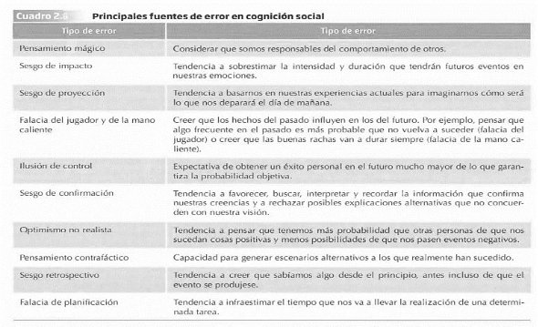

<!DOCTYPE html>
<html lang="" xml:lang="">
<head>

  <meta charset="utf-8" />
  <meta http-equiv="X-UA-Compatible" content="IE=edge" />
  <title>A Minimal Book Example</title>
  <meta name="description" content="<p>This is a minimal example of using the bookdown package to write a book.
The HTML output format for this example is bookdown::gitbook,
set in the _output.yml file.</p>" />
  <meta name="generator" content="bookdown 0.40 and GitBook 2.6.7" />

  <meta property="og:title" content="A Minimal Book Example" />
  <meta property="og:type" content="book" />
  
  <meta property="og:description" content="<p>This is a minimal example of using the bookdown package to write a book.
The HTML output format for this example is bookdown::gitbook,
set in the _output.yml file.</p>" />
  <meta name="github-repo" content="rstudio/bookdown-demo" />

  <meta name="twitter:card" content="summary" />
  <meta name="twitter:title" content="A Minimal Book Example" />
  
  <meta name="twitter:description" content="<p>This is a minimal example of using the bookdown package to write a book.
The HTML output format for this example is bookdown::gitbook,
set in the _output.yml file.</p>" />
  

<meta name="author" content="John Doe" />


<meta name="date" content="2024-10-21" />

  <meta name="viewport" content="width=device-width, initial-scale=1" />
  <meta name="apple-mobile-web-app-capable" content="yes" />
  <meta name="apple-mobile-web-app-status-bar-style" content="black" />
  
  


<script src="libs/jquery-3.6.0/jquery-3.6.0.min.js"></script>
<script src="https://cdn.jsdelivr.net/npm/fuse.js@6.4.6/dist/fuse.min.js"></script>
<link href="libs/gitbook-2.6.7/css/style.css" rel="stylesheet" />
<link href="libs/gitbook-2.6.7/css/plugin-table.css" rel="stylesheet" />
<link href="libs/gitbook-2.6.7/css/plugin-bookdown.css" rel="stylesheet" />
<link href="libs/gitbook-2.6.7/css/plugin-highlight.css" rel="stylesheet" />
<link href="libs/gitbook-2.6.7/css/plugin-search.css" rel="stylesheet" />
<link href="libs/gitbook-2.6.7/css/plugin-fontsettings.css" rel="stylesheet" />
<link href="libs/gitbook-2.6.7/css/plugin-clipboard.css" rel="stylesheet" />


<link href="libs/anchor-sections-1.1.0/anchor-sections.css" rel="stylesheet" />
<link href="libs/anchor-sections-1.1.0/anchor-sections-hash.css" rel="stylesheet" />
<script src="libs/anchor-sections-1.1.0/anchor-sections.js"></script>


<style type="text/css">
  
  div.hanging-indent{margin-left: 1.5em; text-indent: -1.5em;}
</style>

<link rel="stylesheet" href="style.css" type="text/css" />
</head>

<body>


  <div class="book without-animation with-summary font-size-2 font-family-1" data-basepath=".">

    <div class="book-summary">
      <nav role="navigation">


      </nav>
    </div>

    <div class="book-body">
      <div class="body-inner">
        <div class="book-header" role="navigation">
          <h1>
            <i class="fa fa-circle-o-notch fa-spin"></i><a href="./">A Minimal Book Example</a>
          </h1>
        </div>

        <div class="page-wrapper" tabindex="-1" role="main">
          <div class="page-inner">

            <section class="normal" id="section-">
<div id="header">
<h1 class="title">A Minimal Book Example</h1>
<p class="author"><em>John Doe</em></p>
<p class="date"><em>2024-10-21</em></p>
</div>
<p>TEMA 2: COGNICIÓN SOCIAL</p>
<p>La cognición social estudia la manera en que interpretamos, analizamos, recordaos y empleamos la información sobre el mundo social.</p>
<ol style="list-style-type: decimal">
<li>PROCESAMIENTO AUTOMÁTICO Y CONTROLADO EN EL PENSAMIENTO SOCIAL</li>
</ol>
<p>El procesamiento de la información se puede dar de una manera automática o controlada donde la <strong>intencionalidad</strong>, el <strong>control</strong>, el <strong>esfuerzo</strong> y la <strong>eficiencia</strong> son las características que los diferencian.</p>
<p>El <strong>procesamiento automático: </strong></p>
<ul>
<li>Se produce <strong>sin</strong> que las personas sean <strong>conscientes</strong> de ello.<br />
</li>
<li>Resulta difícil o imposible <strong>evitar o interrumpir</strong> ciertos pensamientos que ya se han activado.</li>
<li><strong>No</strong> implica ningún <strong>esfuerzo</strong>, puesto que se basa en estructuras de conocimiento que ya están almacenadas en la memoria.</li>
<li>Es altamente <strong>eficiente</strong>, requiere pocos recursos cognitivos.</li>
<li>Puede ocurrir <strong>simultáneamente</strong> a otros procesos.</li>
<li>Ocurre <strong>después de una amplia experiencia</strong> con una tarea o información <em>(ej: conducir o no poder recordar un nombre y nuestro pensamiento siga trabajando en ello a pesar de estar haciendo otra tarea) </em></li>
</ul>
<table>
<colgroup>
<col width="100%" />
</colgroup>
<thead>
<tr>
<th>POSTERS: Dijksterhuis y van Olden (2006)</th>
</tr>
</thead>
<tbody>
<tr>
<td>Experimento en el cual se comprobaba cómo el procesamiento automático puede ayudarnos a tomar decisiones adecuadas. Para ello, se formaron 3 grupos donde a todos les mostraba un poster y después se les hacia decidir cuál les gustaba más para después quedárselo. A cada grupo se les dio una condición experimental:</td>
</tr>
</tbody>
</table>
<ul>
<li>Decisión inmediata: se mostraba el poster y decidían de forma inmediata sobre sus preferencias.</li>
<li>Pensamiento consciente: se mostraban los posters una vez y después de verlos, tenían un tiempo para reflexionar su elección escribiendo sus pensamientos y evaluaciones en un papel.</li>
<li>Pensamiento no consciente: una vez vistos los posters, realizaban una tarea diferente como resolver anagramas, para evitar reflexionar sobre lo que habían visto. Después se les preguntaba sobre su poster favorito.
En una segunda fase del experimento, se les llamó a los participantes preguntándoles por su grado de satisfacción con su elección y el precio por el que venderían el poster.
RESULTADO: los participantes tomatón mejores decisiones (satisfacción y mayor precio otorgado) cuando eligieron de forma automática, ya que, no pensar demasiado en algo puede reflejar nuestras preferencias reales de una forma más clara.
|</li>
</ul>
<p>Por otro lado, el <strong>procesamiento controlado</strong>, se produce de forma consciente y requiere de un gran esfuerzo.</p>
<table>
<colgroup>
<col width="100%" />
</colgroup>
<thead>
<tr>
<th>FRAMING: información más atractiva</th>
</tr>
</thead>
<tbody>
<tr>
<td></td>
</tr>
<tr>
<td>La publicidad es un sector donde se emplea constantemente la técnica del framing, donde la información se “encuadra”: <em>¿prefieres comer un 10% de grasa o un 90% de carne nagra?</em> Resulta más apetecible un 90% de carne magra.</td>
</tr>
</tbody>
</table>
<p>Las personas gastan más dinero cuando se devuelve una cantidad de dinero en forma de bonificación que como reembolso, ya que un reembolso connota la devolución de una pérdida de nuestro propio dinero.
En los mensajes de salud se ha investigado al respecto para hacerlos más efectivos ¿es mejor presentarlos como pérdidas o ganancias de salud?
- GANANCIAS: más efectivo si se incide en comportamientos que previenen el inicio de una enfermedad.
- PÉRDIDAS: más efectivo cuando se enfoca en comportamientos que detectan enfermedades que las personas pueden tener, pero que no son conscientes.
|</p>
<ol start="2" style="list-style-type: decimal">
<li>ESQUEMAS SOCIALES</li>
</ol>
<p>Un <strong>esquema</strong> es una estructura cognitiva independiente que representa el conocimiento abstracto que tenemos a cerca de un grupo de estímulos, que</p>
<p>consideramos que tienen algo en común y que incluye sus atributos y las relaciones que se establecen entre ellos.</p>
<p>Esquema sobre la UNED: cuando te matriculas tienes un esquema sobre cómo funciona la educación a distancia (de forma autónoma y tutorías en los centros) y toda la información la irá añadiendo en esos esquemas.</p>
<p><strong>Tipos de esquemas:</strong></p>
<p>ESQUEMAS DE PERSONAS Y GRUPOS: es el conocimiento almacenado que tenemos sobre individuos específicos (un amigo,</p>
<p>compañero de trabajo…) o grupos (inmigrantes, mujeres…). Este</p>
<p>esquema sugiere que ciertos <strong>rasgos y comportamientos</strong> están unidos, por lo que si se presencia a un individuo/grupo con un rasgo o comportamientos se activa el esquema que tenemos asociado a dicho individuo/grupo. <em>Los estereotipos.</em></p>
<p>ESQUEMAS DEL YO: estructuras donde almacenamos el conocimiento sobre nosotros mismos. Son <strong>mucho más complejos</strong> ya que se dedica mucho tiempo a pensar sobre nosotros mismos y tenemos un conocimiento muy amplio sobre nuestras destrezas y habilidades,</p>
<p>logros y fracasos y preferencias. <em>Autoconcepto e identidad.</em></p>
<p>ESQUEMAS DE ROLES: contienen información sobre cómo son o se comportan las personas que ocupan un determinado rol en un grupo o sociedad (profesor, político, líder…). Nos permiten comprender o tener <strong>expectativas</strong> sobre las <strong>metas</strong> y <strong>acciones</strong> asociadas a dicho rol y sobre cómo interactuar con ellos.</p>
<p>ESQUEMAS DE SUCESOS O GUIONES DE ACCIÓN (SCRIPTS): se tratan de información sobre <strong>secuencias típicas de acciones</strong> en <strong>situaciones concretas</strong>, que ocurren frecuentemente y con regularidad en un</p>
<p>contexto o cultura determinados. Nos permiten orientarnos en diferentes situaciones y comportarnos de forma apropiada en ellas.</p>
<p>Esquema <em>presentarse a un examen:</em> mostrar el carné, recoger el examen, buscar el sitio asignado, leer las instrucciones…</p>
<p>Esquema <em>restaurante EEUU:</em> serie de acciones que incluyen dejar propina de acuerdo a un porcentaje concreto.</p>
<p>ESQUEMAS ABSTRACTOS DE RESOLUCIÓN DE PROBLEMAS: Son esquemas genéricos, libres de contenido concreto, sobre <strong>procedimientos útiles para solucionar problemas</strong> ya que nos indican qué hacer y qué aspectos tener en cuenta apara encontrar la</p>
<p>causa de un suceso. <em>Teoría del Balance y Teoría de la Atribución</em>[^3]<em>.</em></p>
<ol style="list-style-type: decimal">
<li>Influencia de los esquemas en el pensamiento social</li>
</ol>
<p>Una vez formados los esquemas (estructuras que organizan el conocimiento), éstos influyen en el pensamiento social mediante <strong>tres procesos básicos</strong>:</p>
<ol style="list-style-type: decimal">
<li>LA ATENCIÓN: modo en que <strong><em>percibimos</em></strong>.<br />
</li>
</ol>
<ul>
<li>Los esquemas funcionan a modo de <strong>filtro</strong>: se atiende y percibe la información que coincide con nuestros esquemas.<br />
</li>
<li>Cuando se maneja mucha información al mismo tiempo, nos permite procesar la información con menos esfuerzo y de forma eficiente.</li>
<li><em>Ej: si te formas un esquema de la UNED, te servirá de filtro para guiarte seleccionando la información más relevante para estudiar con éxito.</em></li>
</ul>
<ol start="2" style="list-style-type: decimal">
<li>LA CODIFICACIÓN: información almacenada en la memoria.<br />
</li>
</ol>
<ul>
<li><p>Tendencia a almacenar la información consistente con nuestros esquemas.<br />
</p></li>
<li><p>La información <strong>inconsistente</strong> → no se pierde, se puede almacenar en lugares separados con una etiqueta diferente <strong>dentro de la memoria a largo plazo</strong>.</p></li>
<li><p><em>Ej: esquema “presentarse un examen” si sucede algo inusual,</em></p>
<p><em>ese evento se almacenará por lo inconsistente.</em></p></li>
</ul>
<ol start="3" style="list-style-type: decimal">
<li><p>LA RECUPERACIÓN: proceso de <strong>extracción de la información </strong></p>
<p>que tenemos almacenada en la memoria.</p></li>
</ol>
<ul>
<li><p>Es más fácil que recordemos la información consistente</p>
<p>con las estructuras previas.</p></li>
<li><p>La información inconsistente permanece almacenada en la memoria y podremos recuperar el vento que resultó inconsistente con nuestro esquema.</p></li>
</ul>
<p>Los esquemas son de gran utilidad a la hora de simplificar y organizar información, sin embargo, pueden producir <strong>distorsiones</strong> en la comprensión del mundo real: los esquemas juegan un papel importante a la hora de los estereotipos y prejuicios. Además, son muy <strong>resistentes al cambio</strong> y muestran un <strong>efecto de perseverancia</strong> que los hace inalterables incluso frente a información contradictoria.</p>
<table>
<colgroup>
<col width="100%" />
</colgroup>
<thead>
<tr>
<th>PROFECÍAS AUTOCUMPLIDAS (Efecto Pigmalión)</th>
</tr>
</thead>
<tbody>
<tr>
<td>Las profecías autocumplidas se definen como las situaciones en las que las personas tenemos una creencia (predicción) errónea sobre la alta posibilidad de que ocurra cierto acontecimiento en el futuro, que influenciamos nuestra conducta para aumentar las probabilidades de que ocurra, y termine sucediendo.</td>
</tr>
</tbody>
</table>
<p>Existen dos mecanismos:
- Provocando que la conducta de otra persona se corresponda o ajuste a nuestras expectativas.
- Limitando el rango de conductas que otra persona puede realizar.
EJEMPLO: en el ámbito escolar hicieron una prueba de inteligencia a todos los alumnos, y de forma aleatoria (sin saber los resultados) dijeron a los profesores que un grupo de alumnos eran superiores al resto (sin ser real) con la intención de que esta información cambiase los esquemas y expectativas sobre los niños y, en consecuencia, su conducta. Al final del curso se repitió la prueba y los niños que estaban dentro del grupo “superior” sacaron mejores resultados, ya que los profesores les trataron de forma diferente (más atención, problemas más desafiantes, más tiempo de respuesta…) y en consecuencia los alumnos responden de manera diferente adaptándose a las expectativas de los profesores.
|</p>
<ol start="2" style="list-style-type: decimal">
<li>¿Qué esquemas utilizamos?</li>
</ol>
<p>Los esquemas se <strong>activan</strong> de forma espontánea cuando presenciamos un estímulo relacionado con ellos. La activación de un tipo u otro de esquema se determina por la <strong>accesibilidad:</strong> el grado en el que los conceptos y esquemas están disponibles en nuestra memoria.</p>
<p>→Podemos tener <strong>crónicamente activado</strong> en nuestra memoria</p>
<p>esquemas de roles, <em>ej: los roles de género</em>. De manera que haya mayor probabilidad de clasificar a las personas en función de este esquema y no se preste atención a otro aspecto.</p>
<p>La <strong>accesibilidad</strong> puede venir determinada por:</p>
<ul>
<li><strong>La experiencia pasada:</strong> La <strong>finalidad</strong> de los esquemas es cubrir las lagunas cognitivas que tenemos con la experiencia previa, más que con la información concreta que nos llega.</li>
<li><strong>Los objetivos y metas personales:</strong> hacen que se activen o inhiban determinados esquemas. <em>Ej: el prejuicio → en una reunión social donde el grupo muestre una actitud positiva hacia un grupo, evitaremos utilizar los esquemas negativos que podamos tener al respecto para mostrarnos como una persona sin prejuicios.</em></li>
<li><strong>Cercanía temporal con la que se haya activado un esquema (priming)</strong>: facilita que se vuelva a usar ese esquema para interpretar nuevos estímulos, incluso en contextos no relacionados.</li>
</ul>
<p>El <strong>priming</strong> se define como la activación o disponibilidad de información en la memoria cómo resultado de la exposición a eventos o estímulos específicos. S</p>
<p>Se estudió si <strong>las asociaciones del priming se pueden desactivar una vez formadas</strong> → <strong>UNPRIMING:</strong> proceso por el que los pensamientos o acciones</p>
<p>primados por una experiencia reciente se eliminan una vez que se expresan.</p>
<p>EXPERIMENTO: PREGUNTAS FÁCILES (UNPRIMING)</p>
<p>Se trata de un estudio con dos condiciones (grupos) experimentales en el que tienen que responder a preguntas fáciles que todos deberían saber de “si-no”, cuánto es 1+2, lados de un triángulo…</p>
<p>A un grupo de participantes se les pedía que dieran una respuesta aleatoria y al otro grupo se les mostraba la pregunta dos veces y tenían que decir una respuesta correcta y luego una aleatoria. El primer grupo (aleatorio) respondió correcto el 58% (activación del esquema “responder de forma correcta”) de las veces y el segundo (correcta-aleatoria) respondió correcta el 49% de las veces.</p>
<p><strong>Cuando se expresan</strong> esquemas que han sido activados previamente, se pued e romper esa asociación y desaparecer el efecto de los esquemas activados. Sin embargo, <strong>si no se expresan</strong>, los efectos del esquema pueden persistir.</p>
<table>
<colgroup>
<col width="100%" />
</colgroup>
<thead>
<tr>
<th>PRIMING: estudio de Bargh et al. (1996)</th>
</tr>
</thead>
<tbody>
<tr>
<td>Se trata de u estudio donde se utilizó el priming para activar los rasgos asociados a “maleducado” y “amabilidad”. Se dividió a los participantes en tres grupos a los cuales se les dio frases complejas que tenían que descifrar:</td>
</tr>
</tbody>
</table>
<ul>
<li>un grupo tenía frases con palabras relacionadas con la mala educación (audaz, grosero, descortés…)</li>
<li>otro grupo palabras relacionadas con la amabilidad (cordial, paciente, cortés…)</li>
<li>y otro grupo palabras neutras (ejercicio, ocasional, rapidez…)
En una segunda fase del experimento tenían que consultar con el experimentador cuál era la siguiente tarea que realizar, pero al ir a consultar el experimentador se ponía a hablar con un cómplice ignorando al participante.<br />
Objetivo: comprobar si el participante interrumpía o no la conversación para recibir las instrucciones. Resultado: interrumpían en mayor medida a los que se es había activado el rasgo “maleducado” y, además, la valoración que hicieron los participantes del experimentador en términos de amabilidad no
difirió entre los tres grupos.
Estas diferencias parecen ocurrir de forma no consciente y automática por lo que, el PROCESAMIENTO AUTOMÁTICO es un aspecto importante del pensamiento social, que, como se observa en este estudio, puede afectar al comportamiento manifiesto.
|</li>
</ul>
<ol start="3" style="list-style-type: decimal">
<li>HEURÍSTICOS</li>
</ol>
<p>A parte de los esquemas, otra forma de reducir esfuerzo en el procesamiento de la información son los <strong>HEURÍSTICOS</strong>, una serie de reglas sencillas que usamos frecuentemente para <strong>hacer juicios</strong> y <strong>tomar decisiones</strong> sin consumir muchos recursos cognitivos (Tversky y Kahneman, 1974).</p>
<p>Son atajos mentales que en la generalmente nos funcionan pero que a veces puede llevarnos a cometer <strong>errores</strong> lógicos, probabilísticos o racionales.</p>
<ol style="list-style-type: decimal">
<li>Heurístico de REPRESENTATIVIDAD</li>
</ol>
<p>Se trata de la juzgar la probabilidad de que un evento pertenezca a un determinado conjunto fijándonos en la <strong>similitud</strong> entre el suceso y la categoría. Se trata de un <strong>juicio de similaridad</strong> que lleva a sobrestimar la probabilidad de que algo (un evento) pertenezca a una categoría.</p>
<p><em>“Steve es muy tímido e introvertido, siempre servicial, pero con poco interés por las personas del mundo real. Una persona tranquila y ordenada, que necesita del orden y de la estructura y con una gran pasión por el detalle.”</em> Se nos pregunta si Steve trabaja de granjero, actor,</p>
<p>bibliotecario, buzo o cirujano.</p>
<p>Para poder dar una respuesta rápida, nuestra estrategia será estimar el grado en que Steve es representativo o similar a una persona promedio de cada una de las categorías, y según ello hacemos el juicio a cerca de su trabajo. En este ejemplo sería bibliotecario, pues su descripción coincide con el estereotipo asociado a los bibliotecarios.</p>
<ol start="2" style="list-style-type: decimal">
<li>Heurístico de SIMULACIÓN</li>
</ol>
<p>Es un mecanismo que nos hace creer que es más probable que suceda algo únicamente porque es fácil imaginarlo.</p>
<p>Lo utilizamos para:</p>
<ul>
<li><strong>predecir</strong> un hecho futuro</li>
<li><strong>diagnosticar</strong> la probabilidad de un hecho específico</li>
<li><strong>calcular</strong> las posibilidades de que ocurra algún suceso</li>
</ul>
<p>Este heurístico nos lleva a buscar alternativas a hechos o circunstancias pasadas o presentes sobre <em>qué podía haber ocurrido, si hubiésemos hecho algo diferente…</em> <strong><em>(¿Y si…)</em></strong> es un error cognitivo llamado <strong>pensamiento contrafáctico.</strong></p>
<p>«Mr. Cane y Mr. Tees deben acudir al aeropuerto en vuelos diferentes, pero a la misma hora. Cuando acuden juntos al aeropuerto encuentran un atasco y llegan media hora después de la hora de salida de sus vuelos. A Mr. Crane se le informa que su vuelo salió a su hora. A Mr. Tees se le dice que el vuelo se retrasó y qua acababa de salir hace cinco minutos. ¿Quién está más enfadado?»</p>
<ul>
<li>Mr. Tees estará más molesto porque imaginamos que podría haber</li>
</ul>
<p>tomado su vuelo si el vuelo se hubiera retrasado un poco más, si el atasco hubiera durado un poco menos.</p>
<ol start="3" style="list-style-type: decimal">
<li>Heurístico de DISPONIBILIDAD</li>
</ol>
<p>Hace referencia a la tendencia que tenemos de proporcionar respuestas rápidas basadas en la <strong>facilidad con la que la información nos viene a la mente</strong> (está más accesible).</p>
<p>Lo utilizamos para estimar:</p>
<ul>
<li>la <strong>probabilidad</strong> de un suceso</li>
<li>la <strong>frecuencia</strong> de una categoría</li>
<li>la <strong>aparición conjunta</strong> de dos fenómenos</li>
</ul>
<p>Si pensamos en el riesgo que supone viajar en coche o en avión, es probable que pensemos que el avión es más peligroso. A pesar de que se producen muchos menos accidentes, producen más impacto por sus características y están más accesibles. Sin embargo, las estadísticas el alto número de víctimas en la carretera.</p>
<ol start="4" style="list-style-type: decimal">
<li>Heurístico de ANCLAJE Y AJUSTE</li>
</ol>
<p>Tendencia a reducir la ambigüedad tomando como referencia <strong>un punto de partida (ancla)</strong> al que nos ajustamos para la búsqueda de la solución final.</p>
<p>Predecir el número de alumnos que habrá en una asignatura el año que viene tomando de referencia los alumnos matriculados este año.</p>
<p>Es importante para los científicos sociales por las consecuencias que tienen en los <strong>estudios de opinión</strong>: cuando se responde una escala se es influido por los dos extremos de la escala y tendemos a responder en el punto intermedio, que este punto, además, se establece en función del tamaño de la escala (de 0 a 20 es menor que de 0 a 100).</p>
<ol start="4" style="list-style-type: decimal">
<li>ERRORES EN LA COGNICIÓN SOCIAL</li>
</ol>
<p>A pesar de la efectividad del uso de atajos mentales, usarlos también nos puede conducir a errores a la hora de procesar la información. Aunque los denominemos <em>“errores”</em>, esto no debe considerarse como un aspecto negativo, ya que <strong>estas tendencias de respuesta errónea resultan bastante</strong> <strong>adaptativas</strong> a la hora de dar respuesta a la complejidad del mundo social.</p>
<p><strong>ERROR:</strong> uso es una equivocación puntual o circunstancial, normalmente asociada a la desviación de una</p>
<p>determinada regla normativa</p>
<p><strong>SESGO:</strong> es una tendencia sistemática a cometer una determinada distorsión.</p>
<ol style="list-style-type: decimal">
<li>EL PENSAMIENTO MÁGICO</li>
</ol>
<p>Se trata de las <strong>atribuciones de causalidad</strong> carentes de lógica (sin respaldo empírico) que realizamos cuando creemos que nuestros pensamientos pueden tener consecuencias en el mundo externo, ya</p>
<p>sea por nuestra propia acción o por la intermediación de fuerzas paranormales.</p>
<p>EXPERIMENTO “VUDÚ”</p>
<p>Consistía en que el participante hiciese vudú a otra persona (un cómplice del experimentador) clavándole una serie de agujas. Existieron dos condiciones experimentales, en cada una el cómplice se comportaba de manera diferente:</p>
<ul>
<li>Detestable, para desagradar al participante: llegaba tarde, mascaba chicle con la boca abierta, tiraba papeles al suelo…</li>
<li>Agradable y simpática</li>
</ul>
<p>Después, el experimentador le indicaba al participante que clavase agujas al muñeco y cuando comenzaba, el cómplice comenzaba a quejarse de dolor de cabeza.</p>
<p>Objetivo: observar si los participantes percibían más controlabilidad en el caso “maleducado”.</p>
<p>Resultado: En el caso maleducado, los participantes reales tendían a hacerse responsables de su dolor de cabeza.</p>
<p>El haber pensado mal de la otra persona por su comportamiento inapropiado estaba relacionado con que posteriormente hubieran sentido dolor de cabeza.</p>
<ol start="2" style="list-style-type: decimal">
<li>SESGO DE IMPACTO</li>
</ol>
<p>El sesgo de impacto hace referencia a la tendencia a sobrestimar la <strong>intensidad y duración</strong> que tendrán futuros eventos sobre nuestras emociones.</p>
<p>El <strong>pronóstico afectivo</strong> son las predicciones que hacemos las personas sobre los sentimientos que tendremos en el futuro.</p>
<p>Wilson y Gilbert, 2003: Este sesgo es un ejemplo de <strong>cómo las creencias pueden influir en el afecto.</strong> Según estos autores, los seres humanos somos poco precisos a la hora de imaginarnos nuestro futuro. De esta forma, <strong>los principales sesgos</strong> que cometemos <strong>tienen que ver con las siguientes dimensiones</strong>:</p>
<ol style="list-style-type: decimal">
<li>Errores de bulto sobre la <strong>valencia</strong>[^4] de nuestras futuras emociones.</li>
<li>No tenemos claras las <strong>emociones específicas</strong> que sentiremos en el futuro: aunque podamos acertar la valencia de nuestros sentimientos (positivos o negativos), no podemos adivinar qué emociones concretas sentiremos.</li>
<li>Errores a la hora de predecir la <strong>intensidad</strong> de las emociones que sentiremos.</li>
<li>Errores al estimar la <strong>duración</strong> de nuestros futuros estados emocionales.</li>
</ol>
<p>EXPERIMENTO: VOTANTES HILARY CLINTON (Dorison et al., 2019)</p>
<p>Se les pidió a los votantes de Hilary que se imaginaran como se sentirían después de oír el discurso de Trump en el que toma posesión de su cargo (pronóstico afectivo). Después de esa estimación, verían una grabación del discurso.</p>
<p>Objetivo: comprobar si existe un sesgo comparando la predicción de sus emociones con las que realmente sintieron.</p>
<p>Resultado: El pronóstico afectivo (del 0 al 8) fue una media de 4.08 y la emoción real fue 3.07, oír lo que: los participantes anticiparon niveles de afecto negativo mucho más elevados a los reales.</p>
<ol start="3" style="list-style-type: decimal">
<li>SESGO DE PROYECCIÓN</li>
</ol>
<p>Se trata de la tendencia a usar nuestras vivencias del presente para predecir cómo creemos que será el futuro (Loewenstein et al., 2003).</p>
<p>EJEMPLO: REGRESO AL FUTURO <strong>(Julie Beck para <em>The Atlantic</em>)</strong></p>
<p>La escritora pone de ejemplo para este sesgo que, si la película se situaba en 2015 y en la cinta pudiésemos ver a gente usando el fax y cabinas de teléfono, hoy en día sabríamos que son objetos obsoletos, pero en el momento de escribir la</p>
<p>película se predijo que seguirían existiendo. Basaron sus proyecciones sobre el futuro en el conocimiento de tecnología del momento</p>
<p>presente.</p>
<ol start="4" style="list-style-type: decimal">
<li>FALACIA DEL JUGADOR Y DE LA MANO CALIENTE<br />
</li>
<li>La falacia del jugador</li>
</ol>
<p>La falacia del jugador hace referencia a creer erróneamente que <strong>los sucesos pasados afectan a los futuros en actividades aleatorias</strong>, como los juegos de azar (Tversky y Kahneman, 1971).</p>
<p>Creer que la <strong>equiprobabilidad</strong> [^5] se manifestará en un número reducido de observaciones.</p>
<p><strong><em>EJEMPLO: lanzamiento de moneda</em></strong></p>
<p>Cuando nos imaginamos una secuencia de unos pocos lanzamientos de moneda, donde dos sucesos tienen la misma probabilidad de ocurrir, tendemos a pensar que en esos tiros saldrán un 50% de las veces cara, y</p>
<p>un 50% de cruz. Lo <strong>“razonablemente esperable”</strong> es que: si en una secuencia de cinco lanzamientos de monedas salen cinco caras, los siguientes resultados sean cruces.</p>
<p><strong>EJEMPLO: <em>CI estudiantes</em></strong></p>
<p>«Se sabe que la media del Cociente Intelectual (CI) de la población de estudiantes en una ciudad es de 1OO. Has seleccionado una muestra al azar</p>
<p>de 50 niños para un estudio sobre el éxito educativo. El primer niño analizado</p>
<p>tiene un CI de 150. ¿Cuál esperas que sea la media de CI para la muestra entera?» La mayoría de las personas suele responder que 1OO. Sin embargo, la respuesta correcta es 101 (150 + (49 x 100)) / 50 = 101). Lo <strong>“razonablemente esperable”</strong> es que, si un niño se desvía mucho con un CI de 150 de la media en inteligencia, que es 100, aparezca otro que lo compense con un CI de 50</p>
<p>Estos investigadores comentan que las personas creemos firmemente en la <strong>«justicia» de las leyes del azar:</strong> cualquier desviación de la norma se autocorregirá para que el resultado final acabe siendo lo más parecido a lo «<em>normal</em>».</p>
<p>Cuando existen <strong>muestras muy pequeñas</strong>, como en el caso de una secuencia corta de lanzamientos de una moneda, <strong>no se aplican las «leyes de los grandes números».</strong></p>
<p><strong>TEORÍA DE LOS GRANDES NÚMEROS</strong>[^6]<strong>:</strong> “según la cual cuando tenemos una muestra lo suficientemente grande, la media muestral se parecerá mucho a la poblacional”, ya que “a medida que aumenta el número de observaciones nos alejamos de los resultados extremos”. Así, por ejemplo, si lanzamos al aire una moneda únicamente tres veces, “habrá más posibilidades de que todas salgan de un mismo lado que si tomamos una muestra de 500 lanzamientos”. En la medida que aumentamos el número de tiradas, nos acercamos a la probabilidad real de obtener un 50%.</p>
<ol start="2" style="list-style-type: decimal">
<li>Falacia de la mano caliente</li>
</ol>
<p><em>Fenómeno opuesto a la falacia del jugador.</em></p>
<p>Hace referencia a la tendencia que tienen los jugadores que han anotado una serie de tiros en un periodo corto de tiempo a creer que están en mejor d<strong>isposición para el acierto</strong> que el resto de compañeros (Gilovich et al, 1985).</p>
<p>ESTUDIO: se analizaron las estadísticas de tiro del Filadelfia 76ers, de los 9 jugadores analizados, 8 de ellos presentaban probabilidades más bajas de anotar un tiro después de un acierto (51%) que después de haber fallado (54% de acierto).</p>
<p><strong>La mano caliente <em>(de quien está en racha)</em> no existe.</strong> La probabilidad de meter una canasta después de una buena racha era más baja que la de anotar después de una mala.</p>
<ul>
<li><em>Después de 3 o 4 aciertos el siguiente lanzamiento tenía una probabilidad del</em></li>
</ul>
<p><em>50% mientras que después de 0 o 1 acierto en una serie de 4, era del 57%</em></p>
<ol start="5" style="list-style-type: decimal">
<li>ILUSIÓN DE CONTROL</li>
</ol>
<p>La ilusión de control es una <strong>expectativa de obtener un éxito personal </strong>en el futuro mucho mayor de lo que garantiza la probabilidad objetiva (Langer, 1975).** Principalmente se da cuando creemos erróneamente que interviene nuestra habilidad en <strong>situaciones de azar</strong>.</p>
<p>EJEMPLO: VENTA DE BOLETOS</p>
<p>En dos empresas se hace una rifa de un mismo sorteo vendiendo boletos a 1$:</p>
<ul>
<li>en una empresa se les da un número de boleto al azar<br />
</li>
<li>en la otra se les permite elegir el número del boleto.</li>
</ul>
<p>En una segunda ronda del experimento, se dice en las empresas que alguien de la otra empresa se ha quedado sin boleto que poder comprar y que si alguien le vende el boleto a la otra empresa.</p>
<p>RESULTADO: Los empleados que eligieron el boleto pidieron un precio muchísimo más alto (8.67$ de media) que los de la empresa que no eligió (1.96 dólares de media).</p>
<p><em>La libre elección hacía creer a los empleados que su boleto tenía un precio más elevado.</em></p>
<ol start="6" style="list-style-type: decimal">
<li>SESGO DE CONFIRMACIÓN</li>
</ol>
<p>Es la tendencia a favorecer, buscar, interpretar y recordar la información que <strong>confirma nuestras creencias</strong> y rechaza posibles explicaciones alternativas que no concuerden con nuestra visión (Watson, 1960).**</p>
<p>Los <strong>algoritmos de aplicaciones</strong> (como YouTube) favorecen este sesgo, ya que nos proporciona contenido que cree que nos puede gustar y, de esta</p>
<p>forma, acabar informándonos con noticias afines a nuestras actitudes previas, evitando exponernos a otras creencias contrapuestas a nuestras ideas.</p>
<p>El auge de las <strong><em>fake news</em></strong> se explica mediante este sesgo: por muy absurdo que sea el argumento, si hay gente que lo cree, la persona tenderá a buscar información que sea congruente con su visión, evitando leer fuentes oficiales que podrían llevar la contraria a sus creencias.</p>
<ol start="7" style="list-style-type: decimal">
<li>OPTIMISMO NO REALISTA</li>
</ol>
<p>Hace referencia a la tendencia de los individuos a pensar que tienen <strong>más probabilidad</strong> que otras personas de que les sucedan <strong>cosas positivas</strong> y menos posibilidades de que les pasen cosas negativas (Weinstein, 1980).**</p>
<p>ESTUDIO: se les dio una serie de eventos con carácter positivo y otros con carácter negativos a una serie de estudiantes, y tenían que decir del 0 a 100% cuánto de probable creían que les ocurriría dicho evento en comparación con otro alumno de su mismo sexo.</p>
<p>RESULTADO: Los eventos positivos tuvieron de media un 15.4% y los negativos un -20.4%.</p>
<p>El optimismo no realista de los participantes se asociaba con un <strong>menor interés por hacer algo para reducir el riesgo de padecer enfermedades,</strong> bajando la preocupación que sentían por los problemas de salud, llegando a dejar de realizar conductas preventivas o incluso realizar comportamientos de riesgo.</p>
<ol start="8" style="list-style-type: decimal">
<li>PENSAMIENTO CONTRAFÁCTICO</li>
</ol>
<ul>
<li><em>Derivan del <strong>heurístico de simulación</strong></em></li>
</ul>
<p>Habilidad para generar <strong>escenarios alternativos</strong> a los que realmente han sucedido (Kahneman y Tversky, 1982).</p>
<p>ESTUDIO: Se plantea a unos estudiantes que Mr. Jones moría en un accidente de tráfico, a unos se les dice que salía de trabajar a su hora habitual, a otros que había salido un poco antes por un motivo extraordinario para realizar un recado que le había pedido su mujer.</p>
<p>RESULTADO: con mayor frecuencia los estudiantes de la condición “salir antes” mencionaban que no hubiese pasado si hubiese salido del trabajo a su hora habitual y no hubiese coincidido con quien tuvo el accidente. El otro grupo creyó en mucha menor medida que se hubiese salvado.</p>
<p><em>Los estudiantes tenían más dificultad para imaginar un escenario alternativo cuando el suceso se percibía como cotidiano. </em></p>
<p>ESTUDIO: En un estudio más reciente sobre los Juegos Olímpicos de Barcelona del 92, se le mostraba a un grupo de estudiantes imágenes de los deportistas después de competir, y durante la entrega de medallas (todos ellos habían sido plata o bronce, los videos estaban editados para que los estudiantes no pudiesen saber la medalla de los deportistas). Se les pide a los alumnos que evalúen las emociones de los deportistas en una escala de 10 puntos.</p>
<p>RESULTADO: la media de los atletas de bronce era 7.1 después de terminar la prueba y 5.7 en la entrega de premios. De los de plata fueron 4.8 y 4.3 respectivamente. Tanto en la competición como en la ceremonia de entrega, los medallistas del bronce estaban más satisfechos que los de la plata.</p>
<p>Los investigadores interpretan los resultados según los pensamientos contrafácticos:</p>
<ul>
<li>Pensamiento contrafáctico <strong>al alza:</strong> los medallistas de <strong>plata</strong> se comparan con quienes habían ganado el oro y estaban decepcionados.</li>
<li>Pensamiento contrafáctico <strong>a la baja</strong>: los medallistas de <strong>bronce</strong> se comparaban con los que acabaron en cuarto lugar y se quedaron sin medalla.</li>
</ul>
<p>FALACIA DEL PRIMER IMPULSO: se trata de otro contexto del pensamiento contrafáctico donde existe una tendencia a considerar que <strong>la primera opción</strong> qu e se escoge es la <strong>correcta</strong> y hay una gran resistencia a considerar otra alternativa como válida.</p>
<p>Un ejemplo de esta falacia son los <strong>exámenes</strong>, donde incluso los profesores suelen perpetuarla alentando a los alumnos a mantener en su primera opción. Sin embargo, si en un examen, mientras revisamos cambiamos nuestra</p>
<p>respuesta por una segunda opción y resulta incorrecta tendremos pensamientos como <em>“podía haber acertado si me hubiese quedado con</em></p>
<p><em>la primera opción…”.</em> Incluso, <strong>el malestar sería menor si la opción</strong></p>
<p><strong>inicial fuese incorrecta y nos hubiésemos negado a cambiarla.</strong></p>
<ul>
<li>Existen estudios que demuestran un <strong>mejor resultado</strong> cuando se cambia de opción.<br />
</li>
</ul>
<ol start="9" style="list-style-type: decimal">
<li>SESGO RETROSPECTIVO</li>
</ol>
<p>Tendencia a <strong>creer que sabíamos algo desde el principio</strong>, incluso antes de que el evento se produjese (Fischoff y Beyth, 1975).**</p>
<p>ESTUDIO: Durante 1972 se le preguntó a un grupo de personas de EEUU acerca de qué acontecimientos creen que sucederán tras la visita de Nixon (presidente de EEUU) a China y la URSS, eran una serie de frases ya formuladas a las que los participantes debían asignar una probabilidad <em>(ej: Mao Zedong estaría dispuesto a recibir a Nixon, China obtendría reconocimiento diplomático por EEUU…).</em> Tras el fin de las visitas se les volvió a preguntar a los participantes qué probabilidad de que sucediese algo habían dado a cada evento.</p>
<p>RESULTADO: Cuando un posible acontecimiento había sucedido realmente, los participantes exageraban la probabilidad que le habían asignado originariamente cuando se les pedía que la recordasen.</p>
<p><em>(Ej: exageraban la probabilidad que creían haberle dado a que EEUU y la URSS creasen un programa espacial, evento que ocurrió, pero que cuando se preguntó estaban en plena Guerra Fría y era difícil de imaginar).</em></p>
<ol start="10" style="list-style-type: decimal">
<li>FALACIA DE LA PLANIFICACIÓN</li>
</ol>
<p>Tendencia a <strong>infraestimar</strong> el <strong>tiempo</strong> que nos va a llevar la realización de una determinada tarea.</p>
<p>Ello se debe a que a la hora de planificar adoptamos una <strong>perspectiva interna:</strong> nos centramos en cómo vamos a llevar a cabo</p>
<p>nuestra idea y los pasos a seguir para completar el objetivo, dejando de tener en cuenta otras variables externas que pueden influir determinantemente en el desarrollo del plan (Tversky y Kahneman, 1979).</p>
<p>En la construcción de un edificio, el jefe de obra puede saber a la perfección el plan a seguir para entregar a tiempo los pisos a los clientes, pero los materiales pueden no estar disponibles a tiempo, puede haber una huelga, puede hacer un clima desfavorable…</p>
<p>Una posible solución a esta falacia puede ser adoptar una <strong>perspectiva externa</strong>: que nos fijemos en el tiempo que han tardado otros proyectos similares al nuestro en ser finalmente completados.</p>
<p>ESTUDIO: Se realizó un estudio con alumnos que iban a realizar el TFG sobre el tiempo que tardarían en entregarlo, a un grupo se le preguntó cuanto creían que tardarían “en el mejor de los casos (optimista)” <em>(sin contratiempos)</em> y predijeron 27,4 días de media, y al otro grupo “en el peor de los casos (pesimista)” y fue de 48,6 días.</p>
<p>RESULTADO: Tras entregar el TFG, se vio que la media de entrega fue de 55,5 días, 28,1 días de discrepancia con los optimistas y 6,9 de discrepancia con los pesimistas.</p>
<p>Los estudiantes infraestimaron el tiempo que iba a llevarles el TFG, especialmente cuando creían que todo iba a salirles según lo planificado</p>
<p></p>
<ol start="5" style="list-style-type: decimal">
<li>RELACIÓN ENTRE EL AFECTO Y LA COGNICIÓN</li>
</ol>
<p>La manera en que <strong>sentimos</strong> moldea y contribuye a conformar cómo <strong>pensamos</strong>: cuando estamos de buen humor percibimos a las personas de un modo más favorable e interpretamos los eventos de manera más positiva. Y al revés si salimos enfadados de un examen y llevamos ese estado de ánimo al mundo social.</p>
<p>Estudiaremos la <strong>interacción</strong> entre el <strong>afecto</strong> y la <strong>cognición</strong>:</p>
<ul>
<li><p>Afecto: estado de ánimo actual.</p></li>
<li><p>Cognición: la forma en que procesamos la información.</p></li>
<li><p>Interacción: la interrelación es <strong>doble</strong> → los sentimientos influyen en la cognición, y a la vez, la cognición en el estado de ánimo.</p></li>
</ul>
<ol style="list-style-type: decimal">
<li>La influencia del afecto sobre la cognición</li>
</ol>
<p>El estado de ánimo influye en los <strong>juicios sociales</strong> que se hagan sobre uno mismo y sobre los demás (estado de ánimo positivo = juicios positivos). Influye tanto en la forma en la que <strong>respondemos</strong> a <strong>estímulos</strong> (personas, situaciones o circunstancias) como en la forma en que <strong>recordamos hechos pasados</strong>.</p>
<p>La influencia del estado emocional en la información que se recuerda se puede producir a través de dos tipos de mecanismos:</p>
<ol style="list-style-type: decimal">
<li>El efecto de la memoria dependiente del estado de ánimo: la información que recordamos mientras estamos en un determinado estado emocional puede estar influida por el estado de ánimo que se tenía cuando se almacenó. <em>(Si se almacenó estando de buen humor, se accederá más a esa información cuando estemos de buen humor)</em></li>
</ol>
<ul>
<li>De vacaciones es más probable que recordemos anécdotas de las</li>
</ul>
<p>vacaciones pasadas.</p>
<ol start="2" style="list-style-type: decimal">
<li>Efecto de congruencia con el estado de ánimo: Se percibe y recuerda la información que es congruente con la forma en que nos sentimos: positiva con un estado de ánimo positivo y negativa cuando estemos en un estado negativo. <em>(ha recibido mayor apoyo experimental: Fiske y Taylor, 1991)</em></li>
</ol>
<p>DIFERENCIA: en <strong>la memoria dependiente del estado de ánimo</strong>, no importa la naturaleza positiva o negativa de la información. Si estamos una semana sin salir de casa y no nos sentimos bien (como en la pandemia) podemos recordar la satisfacción que nos generaban las videollamadas con los amigos. En <strong>el efecto de congruencia</strong> la naturaleza afectiva de la información (+o-) sí es relevante.</p>
<p>Existen también otros efectos de las emociones en la cognición:</p>
<ul>
<li><p><strong>CREATIVIDAD</strong>: la incrementa el ánimo positivo. Se genera una mayor activación de ideas y asociaciones que cuando el estado de ánimo es negativo.</p></li>
<li><p><strong>USO DE HEURÍSTICOS</strong>: se pueden utilizar en mayor medida cuando nuestro estado emocional es positivo que cuando es negativo.</p></li>
<li><p><strong>LAS ATRIBUCIONES:</strong> sobre la conducta de otras personas son positivas cuando nuestro estado de ánimo también lo es.</p></li>
<li><p>Atribuciones sobre nosotros mismos: las personas deprimidas explican lo que les sucede atribuyendo los eventos negativos a su infelicidad: <em>todo lo malo me sucede a mí… </em></p>
<p>La información que provoca <strong>reacciones afectivas</strong> se puede procesar de forma diferente y por lo tanto ser <strong>más difícil de ignorar,</strong> pudiendo convertirse en una fuente de <strong>contaminación mental</strong> (Edwards y Bryan, 1997).</p>
<p>CONTAMINACIÓN MENTAL: el proceso por el que nuestros juicios, emociones o comportamientos están influidos por un comportamiento mental que es inconsistente o controlable.</p></li>
</ul>
<p>EXPERIMENTO: JURADO, Edwards y Bryan ** **</p>
<p>Los participantes del experimento debían hacer de jurado en un caso de intento de asesinato. A una parte del jurado se le expuso el cos detallando lo sucedido de una forma que generase grandes emociones. En el otro grupo la información se presentaba de forma neutra. Después, a la hora del veredicto, a una parte se le pidió que olvidades la información presentada y no la tomara en cuenta para el veredicto. A la otra mitad que la tuviese en cuenta.</p>
<p>RESULTADOS:</p>
<ul>
<li>Cuando se les pidió que ignorasen la información, pensaron en el tema con más frecuencia.</li>
<li>La sentencia era más severa en el grupo que recibía la información más emocional y además se les pedía que la ignorasen.</li>
</ul>
<p>No es conveniente pedir a un jurado que ignore una información por las consecuencias que puede tener en el veredicto final.</p>
<ol start="2" style="list-style-type: decimal">
<li>La influencia de la cognición sobre el afecto</li>
</ol>
<p>En sentido contrario al punto anterior, se han señalado algunos <strong>mecanismos</strong> por los que las cogniciones influyen en el estado de ánimo:</p>
<ol style="list-style-type: decimal">
<li>TEORÍA DE LOS DOS FACTORES DE LA EMOCIÓN (Schachter): en ocasiones resulta difícil identificar cómo nos sentimos, por lo que inferimos la naturaleza de estos sentimientos a partir de las situaciones en las que experimentamos las reacciones. Si sentimos activación antes de un examen inferimos que es ansiedad, y no miedo.</li>
<li>A TRAVÉS DE LA ACTIVACIÓN DE ESQUEMAS CON UN FUERTE COMPONENTE AFECTIVO. EJ: La activación de un estereotipo sobre un grupo puede provocarnos miedo porque su estereotipo está ligado a la delincuencia, y otros nos despiertan simpatía.</li>
<li>LOS ESFUERZOS POR REGULAR NUESTRAS EMOCIONES Y SENTIMINTOS: Existen <strong>mecanismos cognitivos para regular los sentimientos</strong>:</li>
<li>Creer firmemente que <strong>nunca se tuvo la oportunidad: </strong>ayuda a que los resultados negativos parezcan inevitables y menos estresantes (Tykocinsci, 2001).<br />
</li>
<li><strong>Caer en la tentación:</strong> cuando nos sentimos tristes y deprimidos tendemos a realizar actividades que supuestamente nos ayudan a sentirnos mejor <em>(comer alimentos que engordan, holgazanear…)</em>. El desarrollo de esas conductas se justifica por la <strong>angustia emocional</strong> que se siente, ya que ésta reduce la capacidad o motivación para controlar nuestros impulsos de hacer cosas que son gratas pero que tienen consecuencias negativas.
<ol style="list-style-type: decimal">
<li>Esta elección <strong>no es automática</strong>, sino <strong>estratégica</strong>: son conductas que empleamos para reducir los sentimientos negativos de la angustia.<br />
</li>
</ol></li>
<li>Error consistente en <strong>hacer pronósticos afectivos:</strong> estos pronósticos se basan en una forma diferente de procesar la información en comparación con la experiencia emocional real.</li>
</ol>
<p><code></code>EXPERIMENTO: NOTICIA INCENDIOS, Dunn y Ashton-James (2008)</p>
<p>Los participantes del experimento se dividían en dos grupos: uno de ellos (<em>experimentador</em> de la emoción) leía una noticia sobre un incendio forestal mortal en España, y se les pidió que informaran de sus emociones mientras leían. El otro grupo (<em>pronosticador</em> de la emoción) tenía que hacer predicciones de como se sentirían si se enterasen de una noticia de un incendio forestal mortal en España. También, se varió el número de víctimas: 5 personas o 10.000.</p>
<p>RESULTADOS:</p>
<ul>
<li>El número de personas afectó al estado emocional del grupo <em>pronosticador</em> mostrando mayor sensibilidad por la tragedia. En el grupo <em>experimentador</em> este número no afectó.</li>
</ul>
<p>Las emociones están basadas en imágenes concretas y experiencias inmediatas, la magnitud de la tragedia afectó al estado emocional de los <em>pronosticadores</em>, pero no afectó al grupo de <em>experimentadores</em> que había basado sus predicciones en una lectura real del suceso.</p>
<p>18
Psicología Social – Jaione A. (2023)</p>
<p>TEMA 3: PROCESOS DE ATRIBUCIÓN</p>
<ul>
<li>atribución ✔ atribución defensiva ✔ atribución disposicional o interna</li>
<li>atribución situacional o externa ✔ controlabilidad ✔ efecto actor-observador
<ul>
<li>error fundamental de la atribución ✔ esquemas causales ✔ estabilidad
<ul>
<li>falso consenso ✔ inferencia correspondiente ✔ locus de causalidad
<ul>
<li>personalismo ✔ relevancia hedónica ✔ sesgo atributivo</li>
</ul></li>
</ul></li>
</ul></li>
</ul>
<p>Los procesos de atribución son un área de la <strong>cognición social</strong> y están estrechamente relaciones con la <strong>percepción</strong> de personas y grupos.</p>
<p>Una <strong>atribución</strong> es una explicación que elaboramos sobre <strong>las causas de la conducta</strong> de los demás y de uno mismo. Nos ayuda a dar sentido, manejar y predecir el mundo social.</p>
<p>Día a día se nos presentan acontecimientos que nos hacen plantearnos <strong><em>“¿por qué?”</em>:</strong> un vecino no nos saluda, un compañero nos pone mala cara, dos personas discuten por la calle, alguien va con un paraguas haciendo sol, vas a comer y te das cuenta de que no tienes hambre… Cuando se generan atribuciones, independientemente de poder confirmarlas o no, es más fácil seguir adelante.</p>
<p>Todas estas situaciones:</p>
<ul>
<li>Son <strong>inesperadas</strong>.</li>
<li>Son fundamentalmente <strong>negativas</strong></li>
<li>Te hacen sentir que <strong>pierdes el control</strong> sobre los acontecimientos</li>
</ul>
<p>Weiner (1980) plantea tres preguntas fundamentales:</p>
<ol style="list-style-type: decimal">
<li>¿Cuáles son las <strong>causas</strong> percibidas de un hecho?</li>
<li>¿Qué <strong>información</strong> se tiene en cuenta en la búsqueda de explicaciones de los acontecimientos?</li>
<li>¿Qué <strong>consecuencias</strong> tiene la atribución causal?</li>
</ol>
<p>En los procesos atributivos la causa es <strong>inferida</strong> [^7], no directamente observable, siendo principalmente procesos centrados en fenómenos cotidianos y psicológicos a los que las personas dan <strong>explicaciones ingenuas</strong> o de <strong>sentido común</strong>.</p>
<p>Estas teorías sobre la atribución se conocen como “<strong><em>Psicología ingenua de la vida diaria”</em></strong> donde los seres humanos se conciben como <strong><em>científicos ingenuos</em></strong> que utilizan inferencias de sentido común para explicar la conducta de las personas (Fiske y Taylor).</p>
<p>El <strong>objetivo</strong> de estos modelos era construir una teoría científica sobre la manera en la que funciona el <strong>sentido común</strong>.</p>
<p>Se resalta la existencia de <strong>factores motivacionales</strong> y <strong>emocionales</strong> que interfieren en la atribución, ya que permiten la <strong>adaptación humana</strong> dando a las personas sentido y percepción de control sobre su ambiente.</p>
<p>Hewstone (1989) muestra la globalidad, importancia e implicaciones que tienen los procesos de atribución para el comportamiento humano:</p>
<ul>
<li>Las atribuciones participan en los procesos de percepción y evaluación de los hechos sociales y lo hacen de forma diferente según si las personas son <strong>actoras</strong> u <strong>observadoras</strong> del hecho.</li>
<li>Se ven influidas por la <strong>categorización o asociación</strong> de las personas a un grupo.</li>
<li>Cuando se transmiten por comunicación intrapersonal pueden llegar a ser compartidas por todo el grupo en forma de <strong>representaciones sociales.</strong></li>
</ul>
<p>En todos los análisis <strong>la atribución es social</strong>, si se considera que:</p>
<ol style="list-style-type: decimal">
<li>Su <strong>origen</strong> reside en la información social y es influida por la interacción social.</li>
<li>Su <strong>objeto</strong> es un acontecimiento que tiene que ver con personas o que tiene consecuencias sociales.</li>
<li>Es <strong>compartida</strong> por los miembros de un grupo o sociedad.</li>
</ol>
<ol style="list-style-type: decimal">
<li>¿CUÁNDO SE PRODUCE EL PROCESO DE ATRIBUCIÓN CAUSAL?</li>
</ol>
<p>Los seres humanos perciben el mundo en términos de <strong>causa</strong> y <strong>efecto</strong>, por lo que los investigadores de la atribución se preguntan si existen los <strong>análisis causales espontáneos</strong> y cuales las causas que hacen que esto ocurra.</p>
<p>De esta forma, los informes escritos y los trabajos en los que no se pide o se fuerza a los participantes a que realicen atribuciones muestran que <strong>sí se produce un análisis espontáneo de los acontecimientos</strong>. Además, los individuos no son conscientes de su intención de realizar atribuciones, ni siquiera se dan cuenta de</p>
<p>haber hecho una inferencia causal (Uleman, 1989). Se buscan las causas tanto cuando se trata de las <strong>características de una persona</strong>, como cuando es un <strong>acontecimiento físico</strong> o una <strong>acción</strong>.</p>
<p>Sin embargo, <strong>esto no ocurre en todas las situaciones</strong>: <em>no nos planteamos por qué espera una persona en la cola del autobús o en la taquilla del cine</em>.</p>
<p><strong>Situacion</strong>es en las que existe una <strong>MAYOR PROBABILIDAD DE HACER UN PROCESO ATRIBUTIVO</strong>:</p>
<ol style="list-style-type: decimal">
<li>ACONTECIMIENTOS INESPERADOS o que se desvían del curso normal de la acción: que nuestro mejor amigo nos niegue ayuda o que un tratamiento médico empeore nuestra salud.<br />
</li>
<li>OBJETIVOS NO LOGRADOS: suspender un examen o perder una competición deportiva. Fosterling (2001):</li>
</ol>
<ul>
<li>Si <strong>encontramos una explicación</strong> que nos permita mantener nuestras teorías ingenuas previas:
<ul>
<li>El proceso puede automatizarse.<br />
</li>
<li>Estas teorías guiarán nuestro comportamiento sin que nos demos cuenta.</li>
</ul></li>
<li>Si el hecho <strong>no encaja en nuestros sistemas previos</strong>:<br />
</li>
<li>Necesitaremos revisar nuestras teorías iniciando una búsqueda voluntaria que dé respuesta a la ocurrencia del acontecimiento.</li>
</ul>
<p>Las explicaciones de lo <strong>inesperado</strong> se han asociado con <strong>las respuestas básicas a los estímulos nuevos</strong> hasta el punto de considerar que el análisis atributivo puede ser ejemplo de una <strong>conducta exploratoria general</strong> provocada por la <strong>incertidumbre</strong> (Weiner, 1985) y teniendo el <strong>control</strong> como principio motivacional (Heider, 1958).</p>
<p>Se entendería la <strong>necesidad de control</strong> como una motivación que pueda satisfacerse con la explicación cuando recibimos un estímulo que nos produce incertidumbre, es decir, <strong>la atribución tendría un carácter funcional.</strong></p>
<ol start="3" style="list-style-type: decimal">
<li><p><strong>ANTE FALLOS O FRACASOS,</strong> pero cuando son comparados con éxitos (Wong y Weiner, 1981). Los pacientes que incumplían el tratamiento médico hacían más atribuciones de su comportamiento que los enfermos que lo cumplían (Nouvilas, 2003).</p>
<p>En general, se buscan explicaciones de los <strong>acontecimientos negativos</strong> (como las catástrofes), pero los <strong>éxitos</strong> pueden ser una experiencia igualmente intensa como para provocar explicaciones causales.</p></li>
</ol>
<p>ESTUDIO: ATRIBUCIÓN ÉXITO/FRACASO EN EXAMEN (Manassero y Vázquez, 1995).</p>
<p>Consistía en observar que los alumnos que habían obtenido objetivamente un éxito y lo percibían como fracaso desarrollaban una actividad atributiva, pudiendo ser debido a la desconfirmación de expectativas o a lo inesperado del acontecimiento.</p>
<ul>
<li><em>Un notable puede percibirse como fracaso si se esperaba un sobresaliente.</em> No es la realidad objetiva la que influye en nuestros pensamientos, sentimientos y conductas, sino nuestra interpretación de esa realidad.</li>
</ul>
<ol start="2" style="list-style-type: decimal">
<li>¿QUÉ FUNCIONES TIENEN LAS ATRIBUCIONES?</li>
</ol>
<p>Las atribuciones nos sirven para sentir que tenemos control sobre nuestro ambiente <strong>(control efectivo),</strong> que salimos airosos de las situaciones <strong>(autoensalzamiento)</strong> y que mantenemos una buena imagen ante los demás y ante nosotros mismos <strong>(imagen positiva)</strong>.</p>
<p>Kelly y Michela (1980) asocia estas motivaciones con las <strong>funciones que se asocian a la atribución</strong>:</p>
<ol style="list-style-type: decimal">
<li><p>FUNCIÓN DE CONTROL: el objetivo del análisis causal era el control efectivo.</p>
<p><em>(percepción de control = consecuencias positivas / pérdida de control = consecuencias negativas)</em></p>
<p>Realizar una atribución (encontrar explicación), ya sea correcta o incorrecta, de algo facilita que podamos <strong>predecir acontecimientos parecidos</strong> y, por tanto, nos proporciona una percepción de control.</p>
<p>Se habla de dos funciones dentro de la función de <strong>control</strong> (Forsyth, 1980): <strong>EXPLICACIÓN</strong> y <strong>PREDICCIÓN</strong>:</p></li>
</ol>
<ul>
<li>El conocimiento que se adquiere en la <strong>explicación</strong> se utiliza para tener el control sobre uno mismo y manejar el ambiente.</li>
<li>El <strong>científico ingenuo</strong> se convierte en un <strong>científico aplicado</strong> cuyo análisis causal le sirve para:<br />
</li>
<li><strong>Anticipar</strong> lo que le va a ocurrir <em>aspectos complementarios </em></li>
<li><strong>Confirmar</strong> sus atribuciones ingenuas. ↑ <em>percepción de control</em></li>
</ul>
<ol start="2" style="list-style-type: decimal">
<li>FUNCIÓN DE AUTOESTIMA: motivación <strong>egocéntrica</strong> (Forsyth, 1980). El proceso de análisis racional de la información puede <strong>sesgarse</strong> para mantener la autoestima. Es evidente en el contexto de los logros:</li>
</ol>
<ul>
<li><p>Atribución de <strong>éxito</strong>: factores <strong>internos</strong> y <strong>estables</strong>.</p>
<p><em>He aprobado porque tengo buen nivel.</em></p></li>
<li><p>Atribuciones de <strong>fracaso</strong>: factores <strong>externos</strong> e <strong>inestables</strong>.</p>
<p><em>He suspendido porque el examen era demasiado rebuscado.</em></p></li>
</ul>
<ol start="3" style="list-style-type: decimal">
<li><p>FUNCIÓN DE AUTOPRESENTACIÓN: motivación de presentarse a uno mismo de una manera favorable (Kelley y Michela, 1980) para ser aceptado por los demás → motivo básico de pertenencia.</p>
<p>Mediante nuestras explicaciones intentamos controlar las atribuciones de las otras personas sobre nosotros y nuestro comportamiento, así, al <strong>manipular la información que reciben</strong> los demás mediante nuestra <strong>autopresentación</strong>, controlamos su percepción.</p></li>
</ol>
<p>3.** TEORÍAS CLÁSICAS DE LA ATRIBUCIÓN</p>
<ol style="list-style-type: decimal">
<li>Psicología ingenua de la acción (HEIDER)</li>
</ol>
<p>4
Psicología Social – Jaione A. (2023)</p>
<p><strong>Heider (1958)</strong> aportó las <strong>bases fundamentales </strong></p>
<p>sobre las que se desarrollan el resto de las teorías de la atribución. Su teoría de <strong>Psicología Ingenua</strong> se basa en la idea de las personas intentan <strong>comprender, controlar y predecir</strong> los acontecimientos que les afectan.</p>
<p>Análisis ingénuo de la acción Atribución de la responsabilidad El principio de covariación</p>
<p>Psicología Social – Jaione A. (2023)</p>
<p>Esta teoría establece un paralelismo entre un <strong>científico</strong> y las <strong>personas en general</strong>: ambos emplean la <strong>observación</strong> para formar sus teorías o creencias sobre lo que ocurre a su alrededor, que confirmarán, refutarán</p>
<ul>
<li>modificarán con cada nueva observación. Estas creencias o teorías influyen en el comportamiento de las personas.</li>
</ul>
<ol style="list-style-type: decimal">
<li>El análisis ingenuo de la acción</li>
</ol>
<p><strong>«Locus de causalidad»</strong> o búsqueda de la causa que origina un comportamiento.</p>
<p><em>Comprender <strong>«por qué»</strong> una persona se comporta de una determinada manera.</em></p>
<p>Cuando realizamos un comportamiento (ej: ayudar a un compañero en un trabajo de ciencias) la causa de esta conducta puede ser de <strong>localización</strong>:</p>
<ul>
<li><strong>Interna, disposicional o personal:</strong> nuestros conocimientos en la materia y nuestra motivación para ayudar.<br />
</li>
<li><strong>Externa, situacional o ambiental:</strong> que el trabajo sea fácil o tengamos suerte.</li>
</ul>
<p>Sin embargo, también puede deberse a la combinación de factores ambientales y personales, de manera que, según aumenta la percepción de la participación de <strong>aspectos personales</strong>, disminuye la influencia percibida de los <strong>aspectos ambientales</strong>, y viceversa. Será la <strong>conjunción</strong> entre las fuerzas ambientales y personales <strong>la que determine la acción</strong>.</p>
<ul>
<li>percepción asp. personales = ↓ contribución percibida asp. ambientales</li>
</ul>
<p>Las <strong>fuerzas personales</strong> tienen componentes de:</p>
<ul>
<li><strong>Capacidad</strong>: física y/o mental para realizar una acción → <em>componente <strong>estable.</strong></em></li>
<li><strong>Motivación</strong>: que impulsa y dirige la acción → <em>componente <strong>variable</strong> y <strong>controlable</strong></em></li>
<li>Intención</li>
</ul>
<p><em>(dentro de la motivación)</em></p>
<ul>
<li>Esfuerzo</li>
</ul>
<p>Las <strong>fuerzas ambientales</strong> tienen componentes de:</p>
<ul>
<li><strong>Dificultad de la tarea</strong> o del objetivo → <em>componente <strong>estable</strong></em><strong>.</strong></li>
<li><strong>Suerte</strong> → <em>componente <strong>variable</strong>.</em></li>
</ul>
<p><strong>La relación</strong> entre ambos tipos de fuerzas nos permite realizar una atribución a la persona o una atribución a la situación.</p>
<p>EL ESFUERZO: <strong>RELACIÓN ENTRE FACTORES PERSONALES Y SITUACIONALES</strong> Existe una relación entre los factores personales y ambientales: el <strong>esfuerzo</strong> tiene:</p>
<ul>
<li>una relación directamente proporcional con la <strong>dificultad de la</strong> <strong>tarea</strong>
<ul>
<li>dificultad de la tarea = ↑ esfuerzo</li>
</ul></li>
<li>una relación inversamente proporcional con la <strong>capacidad</strong>
<ul>
<li>capacidad = ↓ esfuerzo</li>
</ul></li>
</ul>
<p>Existe el <strong><em>poder</em></strong> (la posibilidad) de realizar la acción con éxito cuando la <strong>capacidad</strong> del actor es superior a la <strong>dificultad de la tarea</strong>, o ésta se combina con la <strong>suerte</strong>.</p>
<p>Éxito = capacidad (+ suerte) &gt; dificultad de la tarea Las asociaciones entre estos elementos en el proceso atributivo permiten:</p>
<ul>
<li>realizar <strong>predicciones</strong> sobre el éxito o fracaso de una acción concreta.</li>
<li>el <strong>análisis causal</strong> una vez realizada la acción.</li>
</ul>
<p>Para ayudar a un compañero en su trabajo de ciencias se necesita motivación para intentarlo y capacidad para realizarlo.</p>
<p>Sin embargo, que se pueda o no ayudar al compañero dependerá de la combinación de la motivación y la capacidad con los factores ambientales:</p>
<ul>
<li>Si nuestra capacidad y motivación son suficientes para la dificultad de la tarea.</li>
<li>Si la dificultad de la tarea es superior no se podrá, a menos que intervenga la suerte como, por ejemplo, encontrar justo la información que resuelve las cuestiones que quien ayuda desconoce.</li>
</ul>
<p>El observador o perceptor hará una <strong>atribución interna</strong> de la conducta del actor cuando</p>
<p>observe que este tiene la <strong>capacidad</strong> y la <strong>intención o motivación</strong> de llevarla a cabo.</p>
<p>En cambio, atribuirá la conducta del actor a una <strong>causa externa o ambiental</strong> cuando la <strong>dificultad de la tarea</strong> exceda la <strong>capacidad</strong> de este o no perciba en él la <strong>motivación</strong> de realizar dicha conducta.</p>
<ol start="2" style="list-style-type: decimal">
<li>La atribución de responsabilidad</li>
</ol>
<p>Sabemos quién ha sido el actor de un acontecimiento si lo observamos, pero no sabemos hasta qué punto esa persona es <strong>responsable</strong> de lo ocurrido <strong>o</strong> si ha sido un <strong>accidente</strong>. El <strong>nivel de responsabilidad</strong> aumentará a medida que la acción sea más atribuible a <strong>fuerzas personales</strong> (motivación y capacidad) que a fuerzas situacionales (dificultad de la tarea o suerte).</p>
<ul>
<li>atribución a fuerzas personales = ↑ responsabilidad</li>
</ul>
<p>Heider distingue <strong>cinco niveles de responsabilidad</strong>:</p>
<ol style="list-style-type: decimal">
<li><p>ASOCIACIÓN: no existe conexión causal con la conducta. Se atribuye la responsabilidad de un acto <strong>a alguien que no lo haya realizado</strong>, aunque sí existe alguna relación con el actor real o con la situación. Cuando un niño rompe un cristal con un balón y el profesor castiga a todos los niños que estaban jugando.</p></li>
<li><p>CAUSALIDAD SIMPLE: el actor sí ha realizado la acción de la que se le hace responsable, pero <strong>no ha tenido intención de hacerlo</strong>. Un niño que está aprendiendo a montar en bicicleta lesiona a otro sin querer al pasar por él.</p></li>
<li><p>PREVISIBILIDAD: igual que la anterior, sólo que <strong>el observador juzga</strong> que el actor <strong>podría haber previsto</strong> lo ocurrido. El niño que bajaba rápido la cuesta lesiona a otro sólo por querer demostrar a sus amigos lo rápido que puede bajar la cuesta.</p></li>
<li><p>INTENCIONALIDAD: se le <strong>atribuye intención al actor</strong>. El observador puede realizar una atribución interna de la acción: existen motivación y oportunidad. El niño tenía intención de causar daño con su acción.</p></li>
<li><p>JUSTIFICABILIDAD: casos en los que se pueda <strong>justificar</strong> la acción intencionada por exigidos <strong>por la situación</strong>.</p>
<p>El niño que va en bicicleta hace una maniobra que lesiona a un niño, pero la maniobra la hace para evitar que éste pegue a su hermano pequeño.</p></li>
<li><p>El principio de covariación</p></li>
</ol>
<p>Según este principio, puede atribuirse un efecto a una causa que está <strong>presente</strong> cuando el efecto tiene lugar y que está <strong>ausente</strong> cuando el efecto no se produce.</p>
<p>Este principio de Heider es la base de:</p>
<ul>
<li>Modelo de covariación de Kelley</li>
<li>Teoría de las inferencias correspondientes de Jones y Davis (profundiza en la atribución disposicional interna).</li>
</ul>
<ol start="2" style="list-style-type: decimal">
<li><p>Teoría de las inferencias correspondientes (Jones y Davis)</p>
<p>Continúan la línea de trabajo de Heider, pero centrándose en las <strong>atribuciones internas.</strong></p></li>
</ol>
<p>Para Jones y Davis, la realización de una <strong>inferencia disposicional o atribución interna</strong> es un proceso que consta de dos etapas u objetivos:</p>
<ul>
<li>La atribución de intención</li>
<li>La inferencia correspondiente</li>
</ul>
<p>En esta perspectiva, <strong>el objetivo del perceptor</strong> es <strong>inferir el antecedente causal</strong>, es decir, la causa que explique el comportamiento del autor. Por ello, la búsqueda termina cuando se establece que un motivo tiene la cualidad de ser la razón suficiente que explica la forma en que ocurre un determinado acontecimiento.</p>
<ul>
<li>buscar explicaciones <strong>estables e informativas </strong></li>
</ul>
<p>La conducta del autor será más informativa si se juzga que es <strong>intencionada</strong> y se debe a una intención <strong>consistente</strong> <em>(no variable)</em>, es decir, que corresponde a alguna cualidad estable subyacente del autor.</p>
<p>Estos autores estudian el <strong>proceso a través del cuál se obtiene la información</strong> que permite hacer este tipo de afirmaciones o interpretaciones del comportamiento de los demás.</p>
<p>el perceptor observa la acción + alguno de sus efectos → decide qué efectos intentaba conseguir con la conducta</p>
<p>El modelo se basa en la situación en la que el perceptor observa una acción y alguno de sus efectos, es entonces cuando tiene que decidir cual de esos efectos tiene que conseguir el actor con su conducta.</p>
<p>Para ello, el <strong>actor</strong> deberá tener:</p>
<ul>
<li><strong>Conocimiento</strong> de los efectos de su acción</li>
<li><strong>Capacidad</strong> para conseguir el efecto deseado.</li>
</ul>
<p>En este punto, se resalta el papel del <strong>conocimiento</strong> y la <strong>capacidad</strong> como precondiciones para la <strong>atribución de intención</strong>, de la misma forma que, la <strong>intención</strong> es una precondición para realizar las <strong>inferencias</strong> respecto a las <strong>características estables subyacentes asociadas a la acción</strong> de la persona.</p>
<p>conocimiento + capacidad → atribución de intención</p>
<p>intención → inferencias de características estables subyacentes de la acción</p>
<p></p>
<p>3.2.1 La inferencia correspondiente</p>
<p>El concepto fundamental de la teoría de las inferencias correspondientes es el de <strong>correspondencia</strong> siendo ésta la unión entre un <strong>atributo o característica personal </strong>y un <strong>efecto</strong>, que se ofrece para explicar por qué ocurre un acto.</p>
<p>Es decir, cuando se hace una inferencia correspondiente, el perceptor, juzga que la conducta del actor está causada por <em>(se corresponde con)</em> un determinado <strong>rasgo interno y estable</strong> <em>(una disposición)</em> de esa persona, rasgo que ha <strong>inferido</strong>[^8] a partir</p>
<p>de su conducta.</p>
<p>Para realizar una inferencia correspondiente empleamos <strong>5 elementos informativos:</strong></p>
<ol style="list-style-type: decimal">
<li><p>La conducta elegida libremente es más indicativa de una <strong>disposición</strong>[^9] que un comportamiento impuesto por amenazas, incentivos o restricciones externas. Este factor es el elemento central de la teoría ya que es <strong>necesario para inferir una disposición interna</strong>.</p></li>
<li><p>Los efectos no-comunes o distintivos de la acción aumentan la inferencia correspondiente.</p>
<p>Los efectos <strong>comunes</strong> de distintos comportamientos<strong>:</strong></p></li>
</ol>
<ul>
<li>no proporcionan información sobre la intención del actor</li>
<li>podrían no haber sido decisivos para la elección de una acción correcta</li>
<li>se hubieran obtenido igual con la acción alternativa**</li>
</ul>
<p>Los efectos <strong>distintivos</strong>, los que no comparten dos acciones alternativas:</p>
<ul>
<li><p>proporcionan la información necesaria para realizar una inferencia correspondiente</p></li>
<li><p><strong>Si son varios los efectos distintivos:</strong> la información para hacer una inferencia correspondiente se complica → es difícil determinar cuál de</p>
<p>ellos era el que el actor, por sus características personales, tenía intención de lograr.</p></li>
</ul>
<p>La probabilidad de hacer una inferencia correspondiente <strong>aumenta</strong> con <strong>pocos efectos no comunes</strong> entre dos alternativas de acción.</p>
<p>Si los comportamientos producen una pequeña cantidad de efectos diferentes (es decir, pocos efectos no comunes, por ejemplo, el comportamiento A produce solo terror y el comportamiento B solo produce alegría), <strong>entonces la elección del comportamiento nos informa sobre la disposición de esa persona</strong>[^10].</p>
<ol start="3" style="list-style-type: decimal">
<li>Los efectos poco deseables de la acción: aumentan la inferencia correspondiente.</li>
</ol>
<ul>
<li>El comportamiento <strong>socialmente deseable</strong>: nos dice poco sobre la disposición de una persona, es probable que esté controlado por las normas sociales.</li>
<li>El comportamiento <strong>socialmente indeseable</strong>: mejor base para realizar una inferencia correspondiente. Existe una relación entre <strong>los efectos no comunes</strong> y la <strong>deseabilidad</strong> como determinantes de la <strong>correspondencia</strong>: la mayor correspondencia se dará cuando los efectos no comunes sean pocos y la deseabilidad social sea baja. correspondencia = efectos no comunes + deseabilidad</li>
<li>correspondencia = ↓ efectos no comunes + ↓ deseabilidad social</li>
</ul>
<ol start="4" style="list-style-type: decimal">
<li>Relevancia hedónica: Se realizan más inferencias si la conducta del actor tiene consecuencias positivas o negativas para el observador. Cuando tiene relevancia hedónica para el observador:</li>
</ol>
<ul>
<li><p>El observador agrupará los efectos tanto de la acción elegida como de la no elegida en función del <strong>significado afectivo</strong> que tienen para él. Al agrupar los efectos <strong>se reducen los no comunes</strong> y es más probable la inferencia correspondiente.[^11]</p></li>
<li><p>Si la acción tiene <strong>múltiples efectos:</strong> se tiende a tomar como base para realizar la correspondencia el que tiene más relevancia hedónica para el perceptor (Ross y Fletcher, 1985).</p>
<p>Si un alumno universitario decide doctorarse en Psicología Social en vez de en Psicología Básica, y el observador es profesor de la primera especialidad, de los diversos efectos que esa elección pueda tener para el alumno, el profesor valorará más un efecto como el interés de sus clases, que otros como el que esa especialidad le permita tener mayores probabilidades de trabajo.</p></li>
</ul>
<ol start="5" style="list-style-type: decimal">
<li>PERSONALISMO: hacemos más inferencias correspondientes cuando el comportamiento de los demás parece tener la <strong>intención directa</strong> de beneficiarnos o perjudicarnos.</li>
</ol>
<p><strong>Diferencia entre PERSONALISMO y RELEVANCIA HEDÓNICA</strong>: en el caso de la <strong>relevancia hedónica</strong>, la conducta del actor tiene consecuencias para nosotros, pero no tiene por qué ir dirigida directamente para dañarnos o beneficiarnos.</p>
<p>persona que busca causar miedo o felicidad en los demás. Su elección de comportamiento nos da pistas sobre su personalidad o cómo les gusta interactuar con los demás.</p>
<p>En algunas universidades americanas los alumnos prefieren no tener muchos compañeros asiáticos en clase, ya que suelen sacar muy buenas notas e implica que el punto de corte del aprobado suba (por ejemplo, a un 7). Las calificaciones de estos alumnos no van dirigidas directamente a dañar al resto de compañeros, pues todos ellos quieren obtener la calificación máxima. Por lo que sí tienen relevancia hedónica para el perceptor, pero no personalismo.</p>
<p>La teoría de las inferencias correspondientes ha recibido un apoyo parcial en la investigación. Por ejemplo, esta teoría establece que la combinación entre <strong>efectos no-comunes</strong> y <strong>baja deseabilidad social</strong> será la situación en la que con mayor probabilidad se hacen inferencias correspondientes, siempre y cuando el comportamiento haya sido <strong>libremente elegido</strong>.</p>
<ul>
<li>prob. inferencias correspondientes = efectos no comunes + ↓ deseabilidad social + libre elección de comportamiento</li>
</ul>
<p>EXPERIMENTO: Fidel Castro, Jones y Harris (1967)</p>
<p>Se les presentan a los participantes dos ensayos: un escrito a favor o en contra de Fidel Castro, indicándoles al final del texto si quien lo había escrito había sido obligado a hacerlo o lo hizo libremente.</p>
<p>VD: ideología política de la persona que escribe el texto.</p>
<p>Expectativa investigadores: que la persona que había escrito el texto libremente y a favor de Castro (efecto no-comun y baja deseabilidad) fuese donde se indicase por parte de los participantes que el autor estaba a favor de Castro (inferencia correspondiente).</p>
<p>Libre elección = supuesto central de la teoría.</p>
<p>RESULTADOS: los participantes indicaron que la persona que escribía el texto era simpatizante cuando el texto estaba a favor de Castro y no en contra, sucedía lo mismo en la condición en la que estaba obligado a escribir a favor.</p>
<p>Parece ser que un efecto no-común y poco deseable también promovía la inferencia correspondiente incluso cuando la acción dependía de causas externas (forzar a escribir a favor de Castro).</p>
<ol start="3" style="list-style-type: decimal">
<li>Procesos controlados y espontáneos de atribución: el modelo de covariación y los esquemas causales (KELLEY)</li>
</ol>
<p>La <strong>Teoría de la Atribución de Kelley</strong>, amplía las teorías anteriores intentando encontrar el origen de la acción. A diferencia de las teorías anteriores, incluye:</p>
<ul>
<li>Las situaciones en las que las personas solo tienen información sobre <strong>acontecimientos únicos</strong>.</li>
<li>Aquellas en las que pueden <strong>comparar múltiples casos del mismo suceso</strong></li>
<li><strong>sucesos semejantes. </strong></li>
</ul>
<p>Además, detalla <strong>la forma en la que se produce</strong> el proceso de atribución:</p>
<ul>
<li><strong>HETEROATRIBUCIÓN</strong>: En la observación del comportamiento de <strong>otras personas</strong></li>
<li><strong>AUTOATRIBUCIÓN</strong>: observación del comportamiento <strong>de uno mismo</strong></li>
<li>Observación del <strong>ambiente</strong>.</li>
</ul>
<ol style="list-style-type: decimal">
<li>El modelo de covariación</li>
</ol>
<p>Para Kelley, la inferencia para localizar la causa del efecto se puede realizar observando la covariación de diferentes causas potenciales con dicho efecto, como en un experimento <strong>“el efecto se atribuye a una condición que está presente cuando el efecto también lo está, y que está ausente cuando el efecto también está ausente”</strong> así el efecto se atribuye al factor con el que covaría.</p>
<p>El modelo de covariación sólo es aplicable cuando el observador tiene información sobre <strong>más de un</strong> <strong>suceso</strong> o sobre <strong>diferentes casos de un suceso</strong>.</p>
<p>Kelley distingue <strong>tres factores:</strong></p>
<ul>
<li>La <strong>persona</strong></li>
<li>El <strong>estímulo</strong></li>
<li>La <strong>situación/circunstancias</strong></li>
</ul>
<p>La atribución de la respuesta de una <strong>persona estímulo</strong> [^12] en una determinada <strong>situación</strong> dependerá del grado de las siguientes fuentes de información:</p>
<ol style="list-style-type: decimal">
<li>Consenso con las respuestas de otras personas en esa situación. El consenso será alto cuando todos o la mayoría de los individuos observados se comporten como <strong>la</strong> <strong>persona estímulo.</strong></li>
<li>Consistencia con la forma en la que esa persona ha respondido a ese estímulo en otras ocasiones.<br />
</li>
<li>Distintividad con respecto a la manera en que la persona responde a otros estímulos.</li>
</ol>
<p>Estas tres fuentes de información se pueden configurar según su <strong>intensidad</strong> <em>(alta</em></p>
<ul>
<li><p><em>baja)</em> dando como resultado la posibilidad de realizar una atribución a la persona, al estímulo o a las circunstancias. Así, se observa que existen <strong>8</strong> configuraciones informativas <strong>(2 x 2 x 2).</strong></p>
<p>Hay dos niños jugando en el recreo del colegio (circunstancia), y uno de ellos, Alberto (la persona) le pone la zancadilla al otro, Raúl (el estímulo). Nos preguntamos: <em>¿por qué Alberto le ha puesto la zancadilla a Raúl?</em></p>
<p>Ej. Combinación 1:</p>
<p>La combinación alta entre las tres fuentes de información (alta distintividad, alta consistencia y alto consenso) nos da una atribución segura al estímulo.</p></li>
<li><p>Alberto no pone la zancadilla a ningún otro niño (<strong>↑</strong> distintividad)</p></li>
<li><p>Alberto siempre le pone la zancadilla a Raúl (<strong>↑</strong> consistencia)</p></li>
<li><p>Otros niños le ponen también la zancadilla a Raúl (<strong>↑</strong> consenso)</p></li>
</ul>
<p>Podemos inferir que la causa de este comportamiento está en el estímulo (Raúl). Ej. Combinación 2:</p>
<ul>
<li>Ningún otro niño le pone la zancadilla a Raúl (<strong>↓</strong> consenso)</li>
<li>Alberto les pone la zancadilla a otros niños también (<strong>↓</strong> distintividad)</li>
<li>Alberto ha puesto siempre la zancadilla a Raúl (<strong>↑</strong> consistencia)</li>
</ul>
<p>Inferimos que es la persona (Alberto) la causa del comportamiento <em>(ej: niño agresivo).</em> La investigación empírica ha confirmado en general esta teoría y las predicciones</p>
<p>de Kelley se consideran un modelo normativo según Fiske y Taylor.</p>
<p>EXPERIMENTO: Comedia, McArthur (1972)</p>
<p>Presentó a los participantes breves episodios conductuales “Juan se divirtió en la comedia” e información sobre consenso, consistencia y distintividad. Y confirmó la teoría anterior:</p>
<p>Se podría atribuir el efecto a Juan (persona) si él fuera el único que se divirtió con la comedia (bajo consenso), si esta tuvo el mismo efecto en él en ocasiones anteriores (alta consistencia) y si Juan también suele reírse cuando ve otras comedias (baja distintividad)</p>
<p>Por otro lado, se ha <strong>criticado</strong> que el principio de covariación que lo sustenta <strong>no e s adecuado para realizar inferencias de causalidad</strong>[^13], ya que <strong>la correlación no significa causación</strong> (Hewstone, 1989).</p>
<p>correlación ≠ causación</p>
<p>Además, existen otras <strong>limitaciones</strong>:</p>
<ul>
<li>Cuando la <strong>consistencia es baja</strong>: los individuos aplican <strong>el principio del descuento</strong> que consiste en que no encuentran una relación entre causa y conducta, por lo que se buscan otras causas para explicar la conducta.</li>
<li>La información del <strong>consenso</strong> se <strong>infrautiliza</strong>.</li>
<li>Se requieren múltiples observaciones para poder aplicar la covariación, es decir, necesitamos <strong>mucha información</strong> para realizar el proceso atributivo.</li>
<li>Es un modelo <strong>excesivamente</strong> <strong>racional</strong>, y en ocasiones la atribución se realiza de forma espontánea.</li>
</ul>
<ol start="2" style="list-style-type: decimal">
<li>Los esquemas causales</li>
</ol>
<p>Debido a las críticas, Kelley propone la existencia de unos esquemas causales para hacer atribuciones cuando la información que recibe la persona es <strong>insuficiente, confusa o está distorsionada</strong>, por ejemplo, cuando se aplica el principio de descuento o la combinación de las dimensiones impide llegar a una atribución clara</p>
<p><em>(ej: bajo consenso, distintividad y consistencia).</em></p>
<p>De esta forma define un <strong>esquema causal</strong> como una concepción general que la persona tiene sobre cómo interactúan un determinado tipo de causas para producir un tipo de efecto concreto.</p>
<p>Se basa en la teoría de Heider, concretamente en la idea de que un fenómeno o acción pueden tener múltiples posibles causas. Kelley propone <strong>dos tipos</strong> <strong>principales de esquemas</strong>:</p>
<ol style="list-style-type: decimal">
<li>Esquemas de causas suficientes múltiples: cuando un efecto ocurre por la intervención de al menos una de las causas presentes en la situación,</li>
</ol>
<ul>
<li><p>por todas ellas juntas.</p>
<p>Para explicar el aprobado de un examen sencillo basta con atribuir</p>
<p>que se trataba de una tarea sencilla, sin necesidad de acudir a otras</p>
<p>causas.</p></li>
<li><p>Puede actuar el <strong>principio atributivo de desestimación</strong> cuando el papel de una de las causas presentes en una situación disminuye por la presencia de las otras causas posibles.</p>
<p>El empleado que alaba a su jefe es posible que sea amable, pero también que quiera un aumento de sueldo.</p></li>
</ul>
<ol start="2" style="list-style-type: decimal">
<li><p>Esquema de causas necesarias múltiples: en una situación en la que se dan varias causas es necesario que actúen conjuntamente todas ellas para que se produzca el efecto.</p>
<p>En el caso de aprobar un examen difícil, además del esfuerzo, es necesario que se tenga la capacidad necesaria.</p></li>
</ol>
<p>En ambos esquemas se aplica <strong>el principio atributivo de aumento</strong> por el que el papel de una causa para producir un efecto <strong>aumenta si existe una causa inhibitoria</strong> en el momento en el que se produce el efecto. Por ejemplo, que sea el jefe el que alabe al empleado nos hace dar más importancia a sus características personales, puesto que la diferencia de estatus en este sentido sería una fuerza inhibitoria.</p>
<p>Por otro lado, existen situaciones en las que <strong>solo una causa</strong> determina el proceso de atribución:</p>
<p>Es el caso del <strong>comportamiento moral</strong>, donde los perceptores entienden que sólo los individuos inmorales se comportan de manera inmoral (sólo es necesaria una causa).</p>
<p>De esta forma, se deduce que la presencia de un comportamiento inmoral (un robo</p>
<ul>
<li>una infidelidad) implica directamente que:</li>
<li>el actor es <strong>inmoral</strong>, o</li>
<li><strong>esquema de causas necesarias múltiples</strong></li>
</ul>
<p>Sin embargo, los perceptores emplean el <strong>esquema de causas suficientes múltiples</strong> para explicar el comportamiento moral. Una <strong>disposición moral</strong> puede ser suficiente para un comportamiento moral, pero no es necesaria, puesto que tanto personas morales como inmorales exhibirán este comportamiento cuando les sea ventajoso (Reader y cols., 1982).</p>
<p>Estos esquemas causales son el resultado de <strong>procesos automáticos</strong>. A menudo no dedicamos mucho esfuerzo en realizar una atribución causal, y es en aquellos casos en los que nos encontramos con un <strong>evento inesperado</strong> cuando entraremos en un procesamiento elaborado.</p>
<p>Esto se debe a que en las ocasiones <strong>inesperadas</strong> no sabremos explicar la conducta del actor a través de esquemas, o tengan un mayor impacto sobre nosotros, por lo que necesitaremos realizar una atribución causal precisa.</p>
<p>En el lado opuesto, cuando los eventos de nuestra vida diaria son <strong>esperados</strong> no nos involucramos en un proceso elaborado para determinar una atribución causal. Según Kelley (1973) cuando los eventos se ajustan fácilmente a los esquemas causales existentes, <strong>confiamos</strong> en ellos en lugar de pensar mucho sobre por qué ocurrieron los eventos.</p>
<p>Estos <strong>esquemas causales</strong> provienen de dos fuentes:</p>
<ol style="list-style-type: decimal">
<li>Nuestra experiencia personal</li>
<li>Conocimientos culturales generales</li>
</ol>
<p>Cuando un evento que observamos <strong>no es particularmente inesperado o importante</strong> para nosotros y, además, <strong>no se ajusta fácilmente</strong> a un esquema causal obvio, es probable que basemos nuestra atribución causal en cualquier factor:</p>
<ul>
<li><p>que sea <strong>visualmente</strong> muy destacado<br />
</p></li>
<li><p>fácilmente accesible en la <strong>memoria</strong></p>
<p>EXPERIMENTO: Discusión, Taylor y Fiske (1975)</p></li>
</ul>
<p>Los participantes escuchaban una discusión grupal en una mesa contigua, en la que había un miembro que se destacó visualmente (una raza o género distinto al resto).</p>
<p>Resultados: los participantes tendían a pensar que el miembro visualmente destacado era el que tenía el mayor efecto en la discusión. Cuando el grupo incluía una sola mujer, se la consideraba como la mayor responsable causal de</p>
<p>la discusión.</p>
<table>
<colgroup>
<col width="100%" />
</colgroup>
<thead>
<tr>
<th>PENSAMIENTO MÁGICO <strong>(T2) </strong></th>
</tr>
</thead>
<tbody>
<tr>
<td>El pensamiento mágico es la tendencia a creer que pensar sobre un evento antes de que ocurra, puede tener influencia o ser determinante en dicho evento. Es un claro ejemplo de:</td>
</tr>
</tbody>
</table>
<ul>
<li>Esquema de causas suficientes múltiples</li>
<li>Principio de desestimación
Este tipo de atribución es una forma de explicar la causa de un evento determinado. Pero es un tipo especial de atribución porque va más allá de nuestra comprensión científica de la causalidad, y racionalmente es poco realista que las cosas ocurran sólo por pensarlas.
Niños: Este tipo de pensamiento se desarrolla en el periodo preoperatorio (entre 2-7 años). Freud (1913/1950) propuso que los niños desarrollan esta creencia porque sus pensamientos a veces parecen materializar lo que quieren (los regalos de los Reyes Magos). Si un niño tiene hambre, pensará en comida y tal vez llore, y los padres le darán comida.
En la edad adulta:</li>
<li>Langer (1975) demuestra como los individuos a los que se les permite comprar un número de lotería donde pueden elegir ellos mismos el número tienen la creencia de que tienen más probabilidades de ganar que si le diesen un número aleatorio. Esta ilusión de control sobreestima nuestra capacidad de controlar resultados que realmente son aleatorios o fortuitos.</li>
<li>Pronin y cols. (2006) inducían a los participantes de un experimento a pensar pensamientos de ánimo hacia un jugador que va a tirar un tiro libre (¡puedes hacerlo!), al encestar, los participantes sentían cierto grado de responsabilidad en el acontecimiento. Lo mismo con el ejemplo del vudú y el dolor de cabeza del tema anterior.
El pensamiento mágico también se produce a nivel grupal, puede observarse en rituales religiosos como observar un tabú determinado.
|</li>
</ul>
<p>4.** CONSECUENCIAS DE LAS ATRIBUCIONES: LA T016 EORÍA DE LA MOTIVACIÓN</p>
<p>DE LOGRO DE WEINER</p>
<p>Weiner aplica las teorías de Heider y Kelley a la conducta de logro, haciendo aportaciones en:</p>
<ul>
<li>El campo teórico → de la atribución</li>
<li>La dimensión aplicada → a la motivación de logro</li>
</ul>
<p><strong>La teoría de la motivación de logro</strong> de Weiner (1985) propone que la atribución causal de conductas de logro influye sobre las <strong>emociones</strong> y las <strong>expectativas</strong>. Introduce la <strong>mediación cognitiva</strong> (atribución causal) entre el <strong>estímulo</strong>, las <strong>respuestas afectivas</strong> y las <strong>expectativas</strong>, que influirán en último término en la <strong>motivación</strong>. Por ello, se considera la atribución causal como elemento central en la motivación de logro.</p>
<p></p>
<p>Este modelo explica la <strong>conducta de logro</strong> mediante atribuciones causales percibidas por las personas sobre sus <strong>resultados</strong>.</p>
<ul>
<li>Iniciamos una secuencia motivacional cuando <strong>obtenemos resultados de éxito o fracaso</strong>, por lo que se experimentarán sentimientos de felicidad o frustración.<br />
</li>
<li>Después, iniciaremos un <strong>proceso de búsqueda</strong> (proceso de atribución causal) para establecer la causa de esos éxitos o fracasos.</li>
</ul>
<p>Weiner considera que estas <strong>emociones</strong> (felicidad o frustración-tristeza) son <strong>independientes</strong> de la atribución, ya que son directamente <strong>dependientes</strong> del resultado, es decir, previas al proceso de atribución causal.</p>
<p></p>
<p>17
Psicología Social – Jaione A. (2023)</p>
<p>Por otro lado, en el contexto de la conducta de logro, aunque el número de causas puede ser alto, todas ellas pueden analizarse en base a ciertas <strong>dimensiones causales</strong>: <em>locus de causalidad, estabilidad y controlabilidad</em>. De esta manera, Weiner establece ocho celdas donde pone la estructura de la percepción causal. Tras lo cual, se producen las <strong>consecuencias psicológicas</strong> en el proceso (emociones y expectativas) que influirán en la conducta futura.</p>
<p>A través de estas <strong>dimensiones</strong> se situará la causa en particular entre los extremos que van a definir cada dimensión. La importancia de estas dimensiones se debe a que se encuentran relacionadas con <strong>expectativas</strong> y <strong>emociones</strong> específicas, que en este caso sí son <strong>dependientes</strong> de la atribución causal.</p>
<p>Estas <strong>dimensiones</strong> son:</p>
<ol style="list-style-type: decimal">
<li>LOCUS DE CAUSALIDAD: indican si una acción o sus resultados se atribuyen a factores internos o externos a la persona que la realiza.</li>
</ol>
<ul>
<li>Relacionada con sentimientos de <strong>autoestima</strong> y <strong>orgullo</strong>.<br />
</li>
<li>Cuanto más <strong>interna</strong> sea la atribución que realiza el individuo de la conducta de logro, mayor magnitud de emociones si se logra o no el objetivo.</li>
</ul>
<ol start="2" style="list-style-type: decimal">
<li>ESTABILIDAD: muestra si una causa no varía a lo largo del tiempo.</li>
</ol>
<ul>
<li>Relacionada con expectativas y sentimientos de <strong>esperanza-desesperanza</strong>.</li>
<li>Cuanto <strong>más estable</strong> sea la situación <em>(las matemáticas casi siempre me resultan muy difíciles, o el profesor de lengua suele ser muy estricto),</em> más sentimientos de desesperanza se pueden generar a través del proceso de atribución causal, aumentando o disminuyendo las expectativas de logro futuro.</li>
</ul>
<ol start="3" style="list-style-type: decimal">
<li>CONTROLABILIDAD: indicará el grado en que una persona posee control voluntario sobre la causa.</li>
</ol>
<ul>
<li>Relacionada con la motivación y emociones de <strong>relación social</strong>:<br />
</li>
<li><strong>situaciones controlables</strong>: culpabilidad y vergüenza hacia uno mismo</li>
<li><strong>situaciones incontrolables:</strong> compasión, gratitud e ira hacia los demás</li>
</ul>
<p>18</p>
<p>Psicología Social – Jaione A. (2023)</p>
<p>De esta forma, según Weiner podríamos <strong>predecir la conducta</strong> si atendemos al tipo de <strong>emoción</strong> que el proceso de atribución causal promueve, ya que las emociones influyen en la motivación hacia el logro futuro. Asimismo, refleja la dimensión causal en la que el individuo se centra.</p>
<p>Por ejemplo, ante un fracaso <em>(un suspenso)</em> la persona puede sentir sentimientos de culpabilidad por el resultado académico <strong>(dimensión de controlabilidad)</strong> realizando una atribución causal controlable (no me he esforzado nada). Al mismo tiempo, estos estímulos pueden construir un modo de <strong>motivar</strong> para no volver a tener este tipo de resultados en el futuro <em>(recuperar la asignatura).</em></p>
<p>Weiner destaca el <strong>papel mediacional de la emoción y las expectativas</strong> en su teoría porque conectan directamente causas antecedentes con la conducta futura.</p>
<p>Es más, Weiner y Grham (1989) hacen referencia a <strong>emociones</strong> que denominan <strong>sociales</strong> <em>(ira, compasión, culpabilidad, gratitud…)</em> y que se relacionan con las dimensiones de <strong>locus de causalidad</strong> y de <strong>controlabilidad</strong>. Es decir, a emociones como:</p>
<ul>
<li>la <strong>ira</strong> o la <strong>vergüenza</strong> les seguirían, sistemáticamente, conductas de rechazo
<ul>
<li>retirada del objeto de motivación de logro</li>
</ul></li>
<li>la <strong>gratitud</strong>, la <strong>compasión</strong> y la <strong>culpabilidad</strong> promoverán la aproximación al objeto motivador</li>
</ul>
<p>4.1** La dimensión de estabilidad</p>
<p>Adicionalmente a las emociones, el modelo también contempla las <strong>expectativas </strong>como mediadoras entre la <strong>atribución</strong> y la <strong>conducta</strong>. Mediación realizada, principalmente, a través de la dimensión de estabilidad.</p>
<p>Las <strong>expectativas</strong> serán dependientes de la estabilidad atribuida a la causa.</p>
<p>El modelo atributivo de Weiner relaciona las expectativas con la dimensión de estabilidad a través del <strong>principio de expectativa</strong> “los cambios de expectativa de éxito después de un resultado están influidos por la <strong>inestabilidad</strong> percibida de la causa”, y sus <strong>tres colorarios</strong>[^14]:</p>
<ol style="list-style-type: decimal">
<li>Si el resultado se adscribe a una <strong>causa estable</strong>: existirá una mayor certeza de obtener el mismo resultado en el futuro.</li>
<li>Si el resultado es adscrito a una <strong>causa inestable</strong>: se percibirá una mayor probabilidad de no volver a obtener ese mismo resultado.</li>
<li>Se estima una mayor probabilidad de volver a obtener resultados procedentes de causas atribuidas a factores <strong>inestables</strong>.</li>
</ol>
<p>Es decir, la <strong>estabilidad</strong> se relaciona con el <strong>logro futuro</strong> a través de las <strong>expectativas</strong>, y esto depende además de tipo de resultado obtenido.</p>
<ul>
<li>Si se ha obtenido un <strong>éxito</strong> y se estima una <strong>alta estabilidad</strong>, se crearán expectativas favorables de conseguir los mismos resultados.</li>
<li>Una <strong>alta estabilidad</strong> atribuida a la causa y un <strong>fracaso previo</strong>, generan expectativas desfavorables.</li>
</ul>
<p>Este patrón se invierte en el caso de que se perciba una <strong>baja estabilidad</strong>, ya que, si obtuvo un <strong>fracaso previo</strong>, se generan expectativas favorables ya que existe una mayor probabilidad de cambio de resultado. Sin embargo, <strong>se generan expectativas desfavorables si se ha tenido un éxito con anterioridad</strong>.</p>
<table>
<colgroup>
<col width="100%" />
</colgroup>
<thead>
<tr>
<th>ATRIBUCIONES CAUSALES: PROFESORES <strong>(De la Torre y Godoy, 2002) </strong></th>
</tr>
</thead>
<tbody>
<tr>
<td>Este experimento se centra en la aplicación del modelo de Weiner con docentes que imparten clase en centros de enseñanza. La hipótesis inicial se centra en que las causas a las que los docentes atribuyen los resultados que obtienen sus alumnos pueden determinar la conducta que mantienen con los mismos (efecto Pigmalión). Esto influye en las atribuciones causales que los alumnos hacen de su propio éxito y fracaso académico y, por tanto, sobre su motivación de logro.</td>
</tr>
</tbody>
</table>
<p>El experimento consiste en instruir a los docentes en el modelo atributivo de Weiner, habiendo otro grupo de control que no recibe esta formación.
A los docentes formados, se les promueve que atribuyan de sus alumnos:
- Éxito → causas internas, controlables y estables
- Fracasos → causas internas, controlables e inestables
Las predicciones del modelo sobre las dimensiones son:
1. Locus de causalidad: la atribución del éxito a causas internas produce emociones positivas (autoestima y orgullo) mientras que el fracaso produce emociones negativas.
2. Controlabilidad: atribuir el éxito/fracaso a causas controlables produce motivación y persistencia y, posiblemente, mayor rendimiento futuro.
3. Estabilidad (dimensión central): <em>pueden influir en el logro futuro si producen efecto.</em>
a. Éxito → causas estables: sentimientos de esperanza en alcanzar el objetivo
b. Fracasos → causas inestables: no se generan sentimientos de desesperanza o indefensión
RESULTADOS: los alumnos del grupo experimental obtuvieron calificaciones superiores a los alumnos del grupo de control, durante la investigación, e incluso, cinco meses después de ésta. También, hubo un segundo objetivo: disminuir los factores psicológicos negativos asociados a la docencia, los resultados mostraron una reducción del estrés laboral (burnout), aunque no aparecieron diferencias en el nivel de depresión ni de ansiedad.
El cambio de estilo atributivo pone en manifiesto que además de modificar las expectativas que se poseen sobre los alumnos, repercutió en la motivación docente y su estado de ánimo, ya que se redujo el estrés laboral, lo que influye en la mejore del rendimiento de los alumnos.
|</p>
<p>5.** ERRORES Y SESGOS ATRIBUTIVOS</p>
<p>Como en otras áreas de la cognición social, los sesgos y errores atributivos permiten conocer mejor los procesos de atribución y cómo ocurren en realidad.</p>
<ol style="list-style-type: decimal">
<li>El error fundamental y el sesgo de correspondencia</li>
</ol>
<p>Se origina en la teoría de <strong>Heider</strong>, donde <strong>el error fundamental de la atribución o sesgo de correspondencia</strong> hace referencia a “la tenencia</p>
<p>a atribuir la conducta exclusivamente a disposiciones del actor e ignorar el poder de los determinantes situaciones de la conducta de los individuos a través de las diferentes situaciones” (Nisbett y Ross, 1980).</p>
<p>Si hacemos referencia al modelo de <strong>Kelley</strong>, se observa con mayor frecuencia la <strong>covariación del efecto con la persona</strong>, que con el estímulo <em>(infrautilización de la información de consenso)</em> o las circunstancias <em>(ignorar la influencia de la situación sobre el comportamiento).</em></p>
<ul>
<li>Ejemplos de esto vistos anteriormente:</li>
<li>experimento McArthur (Juan y la comedia) → <em>más información sobre la persona que sobre el estímulo o la circunstancia</em></li>
<li>3 experimentos de Jones y Harris (Fidel Castro) → <em>explican este sesgo</em></li>
</ul>
<p>Los <strong>riesgos</strong> de la existencia de este error los destacan Fiske y Taylor (1984) al poner el foco sobre la posibilidad de que se perciba como responsables de su situación a <strong>personas que son víctimas de las circunstancias</strong>.</p>
<ul>
<li>Una mujer trabajadora puede percibirse como perezosa cuando falla en algún aspecto de su trabajo por exceso de cargas familiares.</li>
<li>Se puede pensar que un niño que suspende los exámenes no estudia, cuando en realidad está sufriendo un proceso de desestructuración familiar.</li>
</ul>
<p>Este sesgo se explica por <strong>determinantes</strong> <strong>cognitivos</strong> y <strong>socioculturales</strong>:</p>
<p><strong>FACTORES COGNITIVOS</strong>: se considera el error fundamental como un <strong>efecto de la “<em>saliencia</em>”</strong> del actor sobre la situación (Heider, 1958): Cuando se observa una persona, lo que destaca es su conducta, mientras</p>
<p>que los factores de fondo o situaciones pueden pasar inadvertidos para el observador.</p>
<p><strong>FACTORES SOCIOCULTURALES:</strong> como son las creencias en un <strong>mundo justo</strong>, muy habituales en <em>culturas individualistas</em> como las occidentales. Lerner (1980) muestra cómo tenemos la tendencia a pensar que el mundo</p>
<p>es un lugar justo en que quien se esfuerza consigue el éxito, o que las cosas positivas le suceden a la gente honesta.</p>
<ul>
<li>Una forma de mantener esa creencia es a través de <strong>atribuciones internas</strong>: si las personas están fuertemente motivadas en creer que el mundo es justo, es muy probable que <strong>aparezcan procesos de culpabilización de la víctima</strong>: <em>pobreza, contraer enfermedades, ser víctima de violación o maltrato…</em> olvidando los determinantes situacionales del proceso.</li>
</ul>
<p>Después de 40 años de investigación sobre el error fundamental de atribución y el sesgo de correspondencia, se ha comenzado a mostrar sus <strong>diferencias</strong>. Según <strong>Gawroski (2004)</strong>:</p>
<ul>
<li><strong>El sesgo de correspondencia:</strong> es una <strong>forma de procesamiento de la información</strong>. Los seres humanos realizan erróneamente inferencias correspondientes a partir de la observación de una conducta forzada situacionalmente[^15].</li>
<li><strong>El error fundamental de atribución:</strong> es una tendencia general a <strong>preferir las atribuciones personales</strong>, o disposicionales, ignorando las influencias situacionales sobre el comportamiento, que estaría afectada por la <strong>cultura</strong>.</li>
<li>Culturas <strong>individualistas</strong>: muy afectados por este error</li>
<li>Culturas <strong>colectivistas</strong>: no se ven afectados por él, son más conscientes de la situación sobre el comportamiento.</li>
</ul>
<p><em>situación &gt; comportamiento</em></p>
<p>La evidencia de esta diferenciación se debe a la realización de experimentos en distintas culturas que varían en la dimensión individualismo-colectivismo. Miyamoto y Kitayama (2002) muestran que <strong>cuando la conducta es muy distintiva</strong> (como en el experimento de Jones y Harris, 1967 <em>Fidel Castro</em>), <strong>estas diferencias desaparecen</strong>, y japoneses (<em>colectivistas</em>) y americanos (<em>individualistas</em>) aplican igual el <strong>sesgo de correspondencia</strong>.</p>
<p>En vista de esta distinción, la evidencia científica es bastante consistente en la hipótesis de que: los miembros de <strong>culturas individualistas</strong> tienen un sesgo cognitivo persistente <strong><em>(error fundamental de la atribución)</em></strong> que <strong>favorece la información disposicional</strong> o <strong>atribución</strong> <strong>interna</strong> y que los miembros de las <strong>culturas colectivistas</strong> muestran menos este sesgo. Pero, de ninguna manera esto</p>
<p>implica que miembros de ambas culturas apliquen en la misma medida la <strong>inferencia correspondiente</strong> si tienen una buena razón para no atender, o descontar, los determinantes situacionales[^16] <strong><em>(sesgo de correspondencia)</em></strong>.</p>
<ol start="2" style="list-style-type: decimal">
<li>Infrautilización de la información de consenso</li>
</ol>
<p>A partir del <strong>modelo de covariación de Kelley</strong> sería de esperar que la persona que realiza la atribución usara en igual medida las tres fuentes de información causal <strong>(consenso, distintividad y consistencia)</strong>.</p>
<p>Sin embargo, el estudio de McArthur <em>(Juan y comedia)</em> permitió observar que <strong>la información de consenso</strong> era** menos explicativa que las otras dos fuentes de información (distintividad y consistencia). Es decir, los participantes no daban igual importancia a la información sobre si muchas personas se comportaban como la persona estímulo en la misma situación (<strong><em>consenso</em></strong>) que a la de la misma persona ante situaciones similares o diferentes estímulos.</p>
<p>muchas personas, misma situación, mismo comportamiento → consenso misma persona, diferentes situaciones, mismo comportamiento</p>
<p>Resulta de gran información la comparación con las otras personas que están en la <strong>misma situación</strong>, sobre todo en circunstancias de alta <strong>incertidumbre</strong> y <strong>ambigüedad</strong>.</p>
<p>Sin embargo, según Fiske y Taylor (1984) «aunque la información de consenso puede cambiar nuestra percepción de cuán común es una experiencia, la experiencia en sí misma no cambia» <em>(no la explica)</em>.</p>
<p>También, puede ocurrir que este tipo de información no se considere tan de <strong>confianza</strong> como otro tipo de observación o experiencia. De esta</p>
<p>forma, muchas veces, después de obtener información cuánto ha gustado algo a otras personas <em>(una película o un discurso político)</em>, para</p>
<p>evaluar la <strong>credibilidad</strong> de esta información nos interesemos por el tipo de personas que son y si se parecen a nosotros.</p>
<p>La información que recibimos sobre el comportamiento o reacción de otras personas ante una determinada situación, más allá de nuestra propia experiencia directa, necesita pasar un filtro que indique en qué medida es válida y relevante para la situación.</p>
<ol start="3" style="list-style-type: decimal">
<li>El efecto del falso consenso</li>
</ol>
<p>La información de consenso, a parte de infrautilizarse, también la distorsiona el observador. El <strong>sesgo de falso consenso</strong> es la tendencia de las personas a creer que su forma de actuar es la que harían los demás en una determinada situación, y que otras personas reaccionarán de la misma manera en la misma circunstancia.</p>
<p>Como ejemplo Ross y cols. (1977) realizan un experimento donde proponen a unos estudiantes pasearse por el campus anunciando la apertura de un nuevo restaurante, lo destacable es que las personas que aceptan esta petición creen que el resto de las demás personas a las que se lo han propuesto también ha aceptado y lo mismo con las que lo han rechazado.</p>
<p>Las <strong>explicaciones</strong> planteadas son:</p>
<ul>
<li><strong>Contacto selectivo</strong>: las personas tendemos a buscar a otras personas que se nos parecen, de forma que juzgamos el comportamiento de los demás basándonos en nosotros y nuestros contactos (con preferencias similares).</li>
<li>Puede considerarse una manera de <strong>solucionar la ambigüedad </strong>de una situación o de responder cognitivamente ante ella. Si en una determinada circunstancia actuamos de cierta manera, podemos pensar que es la obvia y creer que las demás personas harían lo mismo.</li>
<li>Puede ser que intervenga un <strong>mecanismo de defensa del autoestima</strong>, ya que tenemos la necesidad de pensar que las creencias propias son las correctas, de manera que se atribuyen también a los otros para defender la imagen positiva de uno mismo.</li>
</ul>
<ol start="4" style="list-style-type: decimal">
<li>Atribuciones defensivas</li>
</ol>
<p>Una demostración clara de la influencia de la motivación en la atribución fue al estudiar la responsabilidad por un accidente (Walster, 1966): a través de un sencillo escenario donde un coche aparcado caía por una colina, encontró que los observadores del accidente consideraban <strong>mayor la responsabilidad del dueño del coche</strong> cuando las consecuencias del accidente eran <strong>graves</strong> que cuando eran menos importantes.</p>
<p>De esta forma, el observador pone distancia entre lo ocurrido y la posibilidad de que pudiera sucederle lo mismo a él: ver al propietario como el culpable <em>(atribuyéndole la responsabilidad a la víctima)</em> le hace creer que a él no le pasaría lo mismo ya que hubiese actuado diferente para que el accidente no ocurriese.</p>
<p>Sin embargo, percibir un accidente <strong>leve</strong> puede considerarse menos amenazante y por ello se puede percibir menos responsabilidad del implicado.</p>
<p>Posteriormente, Shaver (1970) aclara que la atribución defensiva depende de:</p>
<ul>
<li><strong>Posibilidades</strong> situaciones</li>
<li><strong>Similitudes</strong> personales</li>
</ul>
<p><strong>Si se parece personalmente al implicado</strong> en el suceso negativo, el observador tiende a atribuir la acción a la <strong>casualidad</strong>.**</p>
<p>Por el contrario, si no hay similitud entre el observador del acontecimiento amenazante y el actor, la tendencia del primero será la de <strong>atribuir la responsabilidad de lo sucedido al implicado</strong>.</p>
<p>no similitud + no posibilidad → implicado sí similitud → causalidad</p>
<p>25</p>
<p>Psicología Social – Jaione A. (2023)</p>
<p>Shaver (1975) describe la <strong>atribución defensiva</strong> como un deseo por parte de lo s observadores de hacer cualquier atribución que pueda <strong>reducir la amenaza</strong> que representa la situación para ellos.</p>
<p>De esta forma, aumentará la <strong>atribución interna de la responsabilidad</strong> de un accidente cuanto mayor sea la gravedad de sus consecuencias, siempre que el observador se considere personalmente distinto al actor del acontecimiento y con posibilidades de encontrarse en una situación parecida.</p>
<p>ESTUDIO: ACCIDENTE LABORAL (Salminen, 1992)</p>
<p>La hipótesis de la atribución defensiva servía para explicar las diferencias en la forma en que cada una de las partes implicadas en un accidente laboral interpretaban las causas.</p>
<ul>
<li>Las víctimas de accidentes laborales serios atribuyen estos accidentes a factores externos.</li>
<li>Sus compañeros de trabajo atribuyen a la víctima la responsabilidad de la acción.</li>
</ul>
<ol start="5" style="list-style-type: decimal">
<li>Atribuciones favorecedoras del yo</li>
</ol>
<p>Los sesgos favorecedores se han intentado explicar como un fenómeno <strong>motivacional</strong> y desde el <strong>modelo de covariación</strong> dende es posible entender que la explicación esté en el procesamiento de la información y, por tanto, que se trate de un <strong>proceso cognitivo.</strong></p>
<p><strong>La influencia de la motivación en los procesos de atribución:</strong></p>
<p>Se observa asimetría en las atribuciones en función del resultado logrado en la acción, tendemos a atribuir los:</p>
<ul>
<li><strong>éxitos</strong> a factores internos → <em>la capacidad o el esfuerzo.</em></li>
<li><strong>SESGOS AUTOENSALZADORES:</strong> aumenta la <strong>autoestima </strong>personal.**</li>
<li><em>he aprobado</em></li>
<li>profesor: <em>mis alumnos aprueban por mis métodos didácticos</em></li>
<li><strong>fracasos</strong> a elementos externos → <em>la mala suerte o la casualidad</em></li>
<li><strong>SESGOS AUTOPROTECTORES:</strong> nos protege la autoestima reduciendo la sensación de estrés y malestar.</li>
<li><em>me han suspendido</em></li>
<li>profesor<em>: mis alumnos suspenden porque no se esfuerzan </em></li>
</ul>
<p>26
Psicología Social – Jaione A. (2023)</p>
<p><strong>El proceso cognitivo desde el modelo de covariación</strong>:</p>
<p>Se considera la posibilidad de que la persona pueda percibir la covariación entre su comportamiento y el éxito, pero no entre su comportamiento y el fracaso.</p>
<p>ESTUDIO: MÉTODOS EDUCATIVOS Fosterling (2001) Johnson et al. (1964)</p>
<p>Un profesor pone en práctica estrategias didácticas para mejorar la enseñanza y de esta forma, puede percibir cómo los éxitos de sus alumnos covarían con su esfuerzo como docente. Sin embargo, al no desarrollar ninguna estrategia relacionada con el fracaso hará autoatribuciones externas</p>
<p>del fracaso, ya que es lo que percibe.</p>
<p>Si los resultados del maestro los tuviera que explicar un observador: él no podría observar la covariación entre el rendimiento del alumno y la estrategia del profesor, porque no tiene la conciencia del profesor en cuanto al cambio de estrategia.</p>
<p>Ross y Fletcher (1985) consideran que tanto los procesos <strong>motivacionales</strong> como los <strong>cognitivos</strong> constituyen la base de estos sesgos: «personas son racionales y racionalizadoras, algunas veces explican y otras justifican».</p>
<p>Por otro lado, se plantea que posiblemente tengamos la tendencia a implicarnos en actividades en las que tenemos posibilidades de éxito porque poseemos las <strong>capacidades</strong> necesarias para realizarlas adecuadamente. Así, nos atribuiremos el éxito por nuestra capacidad, y pensemos en la mala suerte o casualidad si fracasamos.</p>
<p><code></code>En cuanto a las <strong>consecuencias para la adaptación de las personas</strong> de los sesgos favorecedores del yo, en contextos laborales y educativos, se ha observado que este sesgo se asocia con <strong>baja autoestima</strong> y <strong>sensación de malestar</strong>, al aumentar la falta de implicación con el contexto académico o de trabajo.</p>
<p>En este sentido, no predice mayores niveles de logro, de manera que es posible que el efecto positivo de las atribuciones de autoensalzamiento se produzca a <strong>corto plazo</strong>, pero no a largo plazo (Robins y Beer, 2001).</p>
<p>autoensalzamiento → bueno a CP / sin efecto a LP</p>
<ol start="6" style="list-style-type: decimal">
<li>Efecto actor/observador</li>
</ol>
<p>Es una extensión del <strong>error fundamental</strong> de atribución.</p>
<p>Se da cuando comparamos la atribución del comportamiento del otro (la que hace el <strong>observador</strong>) con la atribución del propio comportamiento (la que hace el <strong>actor</strong>).</p>
<p>Jones y Nisbett (1972) fueron quienes definieron el <strong>efecto actor-observador</strong> como «una tendencia persistente del <strong>actor</strong> a atribuir sus acciones a las exigencias ambientales, mientras que el <strong>observador</strong> tiende a atribuir esas mismas acciones a disposiciones personales estables»</p>
<p>actor → exigencias ambientales</p>
<p>26 observador → disposiciones personales estables</p>
<p>Psicología Social – Jaione A. (2023)</p>
<p>Para que ocurra este efecto no es necesario que en una situación concreta haya una persona actuando y otra observando; se trata simplemente de la <strong>comparación yo/otro</strong> a la hora de hacer una inferencia causal sobre una acción. Nuestra timidez a la hora de hablar un idioma extranjero la atribuimos a que no se fomenta la expresión oral en las clases que hemos recibido, pero la timidez ajena para lo mismo la asociamos a su torpeza con los idiomas.</p>
<p>Cuando se trata de una situación que implica un éxito frente a un fracaso, como una tarea académica o laboral, pueden entrar en juego los sesgos autoensalzadores o favorables al yo[^17] <em>(apartado anterior).</em></p>
<p>Existen varias explicaciones de este efecto actor-observador, como las explicaciones de origen motivacional y lingüístico, pero la más estudiada se centra en las <strong>“diferencias en el nivel de información”</strong> entre actor y observador: la cantidad y tipo de información accesible al observador es diferente de la que es accesible al actor.</p>
<ul>
<li><strong>El actor</strong>: conoce sus propios sentimientos, intenciones e historia pasada, que le proporciona información de <strong>consistencia</strong> y <strong>distintividad</strong>.
<ul>
<li>está en mejor posición para valorar si los signos situacionales son facilitadores, neutros o inhibitorios para su conducta, y desestimar el papel de las causas me nos probables</li>
</ul></li>
<li><strong>El observador</strong>: tiene poca información sobre el actor, por lo que hace inferencias a partir de una acción inmediata, de la que deduce que el actor se comporta casi siempre de la misma manera.</li>
</ul>
<p>Storms (1973) ilustra la “explicación perspectiva” a partir de la idea de que existe una <strong>diferencia de perspectivas</strong> entre actor y observador, supuso que cuando las personas perciben una situación desde un ángulo distinto al mostrado en primer lugar, pueden cambiar sus atribuciones.</p>
<p>En el experimento, se grababa a dos personas teniendo una conversación desde la perspectiva visual de cada una de ellas. Luego, se mostraba a los participantes el video desde la perspectiva de su interlocutor (la contraria). Esto provocaba un cambio en las atribuciones que los participantes hacían sobre los actores y observadores. Si como actores habían realizado atribuciones externas, desde la perspectiva del observador estas se volvían más internas. Mientras que, si como observadores habían hecho atribuciones internas desde la perspectiva del actor, estas se volvían más externas.</p>
<p>Otros autores, manipulando la «saliencia» del actor (es decir, haciéndole más o menos perceptible para que atraiga más o menos la atención) y como resultado, podemos pensar que <strong>la perspectiva visual</strong>, como un elemento de la composición del grupo, influye en la saliencia y, por tanto, en la percepción de la influencia causal de una persona determinada (Nisbett y Ross, 1980).</p>
<p>También hay intervención de <strong>aspectos motivacionales</strong>, en de la</p>
<p>Actor:</p>
<p>distinción entre <strong>«uno mismo»</strong> y los <strong>«otros».</strong> Haciendo probable</p>
<p>Elogio → atrb. Interna</p>
<p>que la autoatribución del <strong>actor</strong> esté más motivada por el deseo</p>
<p>Culpable → atrb. situacional de mantener la propia autoestima que las heteroatribuciones del</p>
<p><strong>observador</strong>.</p>
<p>El metaanálisis desarrollado por Malle (2006): este efecto es más potente si individuos o grupos muestran <strong>rasgos muy distintivos</strong>, si aumenta el conocimiento personal del otro y cuando se explican hechos hipotéticos. La <strong>asimetría</strong> característica del efecto se produce con eventos negativos, mientras que se invierte con positivos.</p>
<p>El efecto actor-observador tiene <strong>implicaciones para las relaciones interpersonales e intergrupales:</strong> cuando las cosas van mal en una relación <em>(una amistad, un matrimonio o una alianza entre dos países)</em> es probable que cada actor vea al otro como responsable de los problemas. Sin embargo, Storm (1973), sugiere que <strong>una forma de eliminar el efecto intensificador de conflictos</strong> que puede promover el efecto actor - observador es promover que se tome la perspectiva de la otra parte, para de esta forma calmar tensiones y promover un mayor consenso.</p>

            </section>

          </div>
        </div>
      </div>


    </div>
  </div>
<script src="libs/gitbook-2.6.7/js/app.min.js"></script>
<script src="libs/gitbook-2.6.7/js/clipboard.min.js"></script>
<script src="libs/gitbook-2.6.7/js/plugin-search.js"></script>
<script src="libs/gitbook-2.6.7/js/plugin-sharing.js"></script>
<script src="libs/gitbook-2.6.7/js/plugin-fontsettings.js"></script>
<script src="libs/gitbook-2.6.7/js/plugin-bookdown.js"></script>
<script src="libs/gitbook-2.6.7/js/jquery.highlight.js"></script>
<script src="libs/gitbook-2.6.7/js/plugin-clipboard.js"></script>
<script>
gitbook.require(["gitbook"], function(gitbook) {
gitbook.start({
"sharing": {
"github": false,
"facebook": true,
"twitter": true,
"linkedin": false,
"weibo": false,
"instapaper": false,
"vk": false,
"whatsapp": false,
"all": ["facebook", "twitter", "linkedin", "weibo", "instapaper"]
},
"fontsettings": {
"theme": "white",
"family": "sans",
"size": 2
},
"edit": {
"link": "https://github.com/USERNAME/REPO/edit/BRANCH/%s",
"text": "Edit"
},
"history": {
"link": null,
"text": null
},
"view": {
"link": null,
"text": null
},
"download": ["_main.pdf", "_main.epub"],
"search": {
"engine": "fuse",
"options": null
},
"toc": {
"collapse": "subsection"
}
});
});
</script>

</body>

</html>
